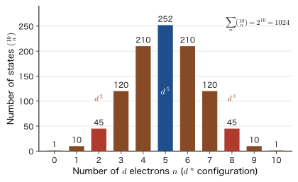
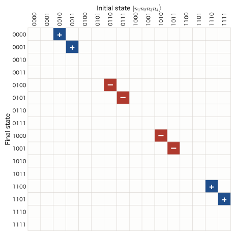

Chapter 57Identical Particles and the Occupation-Number Representation — Second Quantization of Bosons and Fermions
In the previous chapter, we recast a single harmonic oscillator in the language of “$n$ quanta are present.” Real matter, however, is not a single oscillator. It consists of many orbitals (the 1s, 2p, … orbitals of an atom, molecular orbitals, the Bloch states of a crystal) and the many electrons that occupy those orbitals. In this chapter we extend the “$n$ quanta are present” of the previous chapter to many orbitals and many particles. This is the occupation-number representation, the method known as “second quantization.”
The starting point is the fact that identical particles are indistinguishable. In classical mechanics, we could attach name tags “No. 1” and “No. 2” to two balls and follow their trajectories. Two electrons, however, cannot be given name tags. The indices 1 and 2 of the wave function $\Psi(\bm{x}_1,\bm{x}_2)$ are merely labels attached for the convenience of calculation and have no physical meaning. All that truly has meaning is “how many particles occupy which orbital.” As a result, for electrons (fermions) the wave function is antisymmetric, and the Pauli exclusion principle, “only one particle can occupy a given orbital,” follows. For photons and phonons (bosons) the wave function is symmetric, and “any number of particles can occupy the same orbital.” This difference lies at the root of the properties of materials: the periodic table, metals and insulators, magnetism, lasers, and superfluidity.
In this chapter, we first see the effect of statistics numerically in a two-particle problem (for two particles in a box, the symmetric state brings the particles closer together, and the antisymmetric state keeps them farther apart). Next, we specify a state by the “list of occupation numbers” $\ket{n_1,n_2,\dots}$, and show the counting of states and the one-line derivation of the distribution functions (the Fermi–Dirac distribution and the Bose–Einstein distribution). Finally, we construct the operators that increase or decrease the number of particles by one, for bosons (commutation relations) and for fermions (anticommutation relations), and go on to the fact that a Slater determinant is just the product $\hat{c}^\dagger\hat{c}^\dagger\cdots\ket{0}$, the counting of the electronic states of the hydrogen molecule and of H$_2$O, and the description of excitations in the language of electron–hole pairs. The tools of this chapter are the foundation of everything that follows: how to write the many-body Hamiltonian (Chapter 58), the electron gas and the Hubbard model (Chapter 59), photons and phonons (Chapter 60), and also all of the companion volumes “Computational Materials Science (AD 05),” “Solid-State Physics (AD 06),” “Density Functional Theory (AD 07),” and “Linear Response Theory (AD 08).”
- Be able to explain how the indistinguishability of identical particles limits the eigenvalues of the permutation operator $\hat{P}_{ij}$ to $\pm1$; the symmetrization requirement that bosons are symmetric and fermions are antisymmetric; and how the Pauli exclusion principle follows from antisymmetry
- Be able to compute exactly $\expval{(x_1-x_2)^2}$ for two particles in a box ($n=1,2$) as $0.1033\,L^2$ for distinguishable particles, $0.0384\,L^2$ for the symmetric state, and $0.1682\,L^2$ for the antisymmetric state, and to explain the “effective attraction and repulsion that are not forces” (the exchange hole)
- Be able to explain the occupation-number representation $\ket{n_1,n_2,\dots}$, the vacuum $\ket{0}$, the particle-number operator $\hat{N}$, and Fock space, and to count the number of states as $M^N$ (distinguishable particles), $\binom{N+M-1}{N}$ (bosons), and $\binom{M}{N}$ (fermions). Be able to count the 45 states of $d^2$ and the 252 states of $d^5$
- Be able to show that the Fermi–Dirac distribution and the Bose–Einstein distribution follow from the factorization of the grand partition function into a product over orbitals
- Be able to derive, from the action of the creation and annihilation operators for bosons, such as $\hat{a}_i^\dagger\ket{\dots n_i\dots}=\sqrt{n_i+1}\ket{\dots n_i+1\dots}$, the commutation relation $\comm{\hat{a}_i}{\hat{a}_j^\dagger}=\delta_{ij}$ and $\ket{n_1,\dots}=\prod_i(\hat{a}_i^\dagger)^{n_i}/\sqrt{n_i!}\,\ket{0}$, and to relate them to symmetrized wave functions. Be able to explain Bose enhancement (a factor of $n+1$)
- Be able to define the fermion operators $\hat{c}_i$ and $\hat{c}_i^\dagger$ from the convention for the ordering of the orbitals and the sign $(-1)^{\sum_{j\lt i}n_j}$, and to derive the anticommutation relations $\acomm{\hat{c}_i}{\hat{c}_j^\dagger}=\delta_{ij}$, $\acomm{\hat{c}_i}{\hat{c}_j}=0$, and $(\hat{c}_i^\dagger)^2=0$. Be able to write the matrices of the Jordan–Wigner transformation ($M=2$ and $M=4$) without miscounting the signs
- Be able to show that a Slater determinant corresponds to $\hat{c}_{i_1}^\dagger\cdots\hat{c}_{i_N}^\dagger\ket{0}$ and that its inner product becomes $\det\braket{\chi}{\chi'}$; that an orbital rotation changes only the phase $\det U$; and that $\sigma_{\mathrm g}\alpha\,\sigma_{\mathrm g}\beta$ of H$_2$ decomposes into a covalent bond and an ionic bond in a 1:1 ratio
- Be able to write the excitations from the HF ground state $\ket{\Phi_0}$ in the language of $\hat{c}_a^\dagger\hat{c}_i$ (electron–hole pairs), and to count the number of configurations of H$_2$O (STO-3G): 1001 in all, 441 for $S_z=0$, 40 single excitations, and 270 two-electron excitations
Source notes: This chapter supplements material that is not in the original notes. Related notes: Yasuhide Mochizuki, “Physics Notes: Quantum Mechanics 3,” pp. 61–64 (the introduction of second quantization, and a preview of the anticommutation relations for fermions).
57.1 Indistinguishability of Identical Particles and the Symmetrization Requirement
57.1.1 Electrons cannot be given name tags
In classical mechanics (AD 03), even two billiard balls made of exactly the same material and of the same size could be distinguished. The position $\bm{r}_1(t)$ of ball 1 and the position $\bm{r}_2(t)$ of ball 2 each trace a smooth curve. Even after a collision, we can decide “which is which” by following those curves. In other words, each ball carries a name tag called its trajectory.
In quantum mechanics, this is impossible. There are three reasons. (i) The position of a particle is represented by the spread of a wave packet, and in a region where two wave packets overlap, the very notion of “which trajectory” does not hold. (ii) If we try to follow the trajectories by measuring the positions, the measurement disturbs the state (Chapter 8). (iii) Particles of the same kind have exactly the same mass, charge, and spin, so there is no property that could take the place of a name tag. For example, there is no mark that distinguishes an electron in a hydrogen atom from an electron in Cu. This is the indistinguishability of identical particles (which we also treated in Chapter 33, Section 33.5).
This indistinguishability takes a form that can be tested by experiment. Consider two identical particles that collide and scatter (Figure 57.1). In the coordinate system in which the center of mass of the two particles (the center of the weights of the two particles) appears to be at rest (the center-of-mass frame), the two particles approach each other in opposite directions, collide, and again fly apart in opposite directions. Suppose that a detector finds one particle in the direction at angle $\theta$ from the direction of incidence. That particle may have come from the left and been deflected by the angle $\theta$, or it may have come from the right and been deflected by the angle $\pi-\theta$ (a particle coming from the right has the opposite direction of incidence, so to fly in the same detector direction it only has to be deflected by $\pi-\theta$). If there is no means of telling which it was, we must add the probability amplitudes of the two paths and then square the sum (this is the same as in the double slit, where interference appears if we do not know which slit the particle passed through; Chapter 7). Denote the scattering amplitudes of the respective paths by $f(\theta)$ and $f(\pi-\theta)$ ($f(\theta)$ is the probability amplitude for a particle to be deflected from the direction of incidence into the direction at angle $\theta$, and the square of its absolute value is the intensity of scattering in that direction). Then the scattering probability of distinguishable particles is $\abs{f(\theta)}^2+\abs{f(\pi-\theta)}^2$, but for indistinguishable particles, if we ignore spin, the scattering probability is
\begin{equation} \abs{f(\theta)\pm f(\pi-\theta)}^2=\abs{f(\theta)}^2+\abs{f(\pi-\theta)}^2\pm2\,\Real\bigl[f(\theta)f^*(\pi-\theta)\bigr] \label{eq:57-mott} \end{equation}Here the last term on the right-hand side is the interference term, where $+$ corresponds to bosons and $-$ to fermions (with parallel spins and an antisymmetric spatial part). In the direction $\theta=\pi/2$ we have $f(\theta)=f(\pi-\theta)$, so in the antisymmetric case the scattering probability becomes $0$, and in the symmetric case it becomes twice that of distinguishable particles. In the scattering of electrons of spin $\tfrac12$ whose spin orientations are not aligned (unpolarized), we average over the spin singlet (weight $1/4$; the spatial part is symmetric) and the triplet (weight $3/4$; the spatial part is antisymmetric), and obtain $\abs{f(\theta)}^2+\abs{f(\pi-\theta)}^2-\Real\bigl[f(\theta)f^*(\pi-\theta)\bigr]$ (the general form of the Mott formula). In this case the probability does not become $0$ even at $\theta=\pi/2$, but becomes half that of distinguishable particles. This kind of interference was shown theoretically by Mott in 1930 and was confirmed in experiments such as the scattering of $\alpha$ particles (nuclei of He; spin-$0$ bosons) by one another. Eq. \eqref{eq:57-mott} shows that “statistics” is not merely a matter of how to count, but a physical effect that shows up in measurements.
57.1.2 The permutation operator and the fact that its only eigenvalues are $\pm1$
To say that particles are indistinguishable means that, even if we swap the labels of the particles, nothing that can be observed in a measurement changes. Let us write this as a formula. The argument $\bm{x}_i=(\bm{r}_i,\sigma_i)$ of the wave function $\Psi(\bm{x}_1,\dots,\bm{x}_N)$ of $N$ particles collects the position and spin variables together (Chapter 33, Section 33.4).
Definition 57.1: Permutation operator $\hat{P}_{ij}$
We define the operator $\hat{P}_{ij}$ that interchanges the coordinates (the position and spin variables) of particle $i$ and particle $j$ by
\begin{equation} \bigl(\hat{P}_{ij}\Psi\bigr)(\dots,\bm{x}_i,\dots,\bm{x}_j,\dots)=\Psi(\dots,\bm{x}_j,\dots,\bm{x}_i,\dots) \label{eq:57-P} \end{equation}This is the exchange operator $\hat{P}_{12}$ of Chapter 33 extended to general $i,j$.
Since $\hat{P}_{ij}$ returns to the original when applied twice in succession, $\hat{P}_{ij}^2=1$. This determines the eigenvalues. Applying $\hat{P}_{ij}$ once more to both sides of $\hat{P}_{ij}\Psi=\lambda\Psi$ gives $\Psi=\hat{P}_{ij}^2\Psi=\lambda\hat{P}_{ij}\Psi=\lambda^2\Psi$, so $\lambda^2=1$, that is,
\begin{equation} \lambda=+1\ \ (\text{symmetric}),\qquad \lambda=-1\ \ (\text{antisymmetric}) \label{eq:57-eig} \end{equation}holds.
$\hat{P}_{ij}$ is both a Hermitian operator and a unitary operator. Let us check this for $\hat{P}_{12}$ (we include the spin variables in $\bm{x}$, and take the integral to include the sum over spins). From the definition, Eq. \eqref{eq:57-P}, we have
$$ \begin{aligned} \braket{\Phi}{\hat{P}_{12}\Psi}&=\int\Phi^*(\bm{x}_1,\bm{x}_2)\,\Psi(\bm{x}_2,\bm{x}_1)\dd\bm{x}_1\dd\bm{x}_2\\ &=\int\Phi^*(\bm{x}_2,\bm{x}_1)\,\Psi(\bm{x}_1,\bm{x}_2)\dd\bm{x}_1\dd\bm{x}_2=\braket{\hat{P}_{12}\Phi}{\Psi} \end{aligned} $$Here the second line is obtained by renaming the integration variables as $\bm{x}_1\leftrightarrow\bm{x}_2$, which does not change the value of the integral. Hence $\hat{P}_{12}$ is a Hermitian operator (which is also consistent with its eigenvalues being real). Combined with $\hat{P}_{12}^2=1$, this gives $\hat{P}_{12}^\dagger\hat{P}_{12}=\hat{P}_{12}^2=1$, so it is also unitary. That is, even if we swap the names of the particles, the inner products between states (the probability amplitudes) do not change.
Next we consider the relation to the Hamiltonian. The Hamiltonian of identical particles does not change when the particle labels are interchanged. For example, the Hamiltonian of two electrons around an atomic nucleus (charge $Ze_0$) is
$$ \hat{H}=-\frac{\hbar^2}{2m_{\mathrm e}}\bigl(\nabla_1^2+\nabla_2^2\bigr)-\frac{Ze_0^2}{4\pi\varepsilon_0}\left(\frac{1}{r_1}+\frac{1}{r_2}\right)+\frac{e_0^2}{4\pi\varepsilon_0\abs{\bm{r}_1-\bm{r}_2}} $$and it gives the same expression when the indices 1 and 2 are interchanged. Therefore, $\hat{H}\Psi$ with its arguments interchanged is equal to $\hat{H}$ acting on $\Psi$ with its arguments interchanged, and
\begin{equation} \comm{\hat{H}}{\hat{P}_{ij}}=0 \label{eq:57-HP} \end{equation}holds. This leads to an important conclusion.
Derivation: Symmetry is preserved over time
Suppose that at time $t=0$ we have $\hat{P}_{ij}\Psi(0)=\lambda\Psi(0)$ ($\lambda=\pm1$). Applying $\hat{P}_{ij}$ to both sides of the time-dependent Schrödinger equation $i\hbar\,\partial_t\Psi=\hat{H}\Psi$ and using Eq. \eqref{eq:57-HP}, we obtain
$$ i\hbar\,\partial_t\bigl(\hat{P}_{ij}\Psi\bigr)=\hat{P}_{ij}\hat{H}\Psi=\hat{H}\bigl(\hat{P}_{ij}\Psi\bigr) $$That is, $\hat{P}_{ij}\Psi(t)$ is also a solution of the same equation. Moreover, $\lambda\Psi(t)$ is also a solution of the same equation, and at $t=0$ the two coincide, since $\hat{P}_{ij}\Psi(0)=\lambda\Psi(0)$. Since the solution of an initial-value problem for a differential equation is unique, $\hat{P}_{ij}\Psi(t)=\lambda\Psi(t)$ at all times.
∎
Therefore, “whether a system of particles is symmetric or antisymmetric” is an invariant that does not change over time. For two particles, since $\hat{H}$ and $\hat{P}_{12}$ commute, the eigenstates of the Hamiltonian can be chosen to be either symmetric or antisymmetric. For $N\ge3$, different $\hat{P}_{ij}$ do not commute with one another, so besides the states that simultaneously have the eigenvalue $+1$ (or $(-1)^P$) for all interchanges (the completely symmetric and completely antisymmetric states), there also exist states in which the symmetries are mixed (states of mixed symmetry). However, since $\hat{H}$ commutes with all the $\hat{P}_{ij}$, it maps each of the space of completely symmetric states and the space of completely antisymmetric states into itself. Therefore, we can choose the eigenstates of the Hamiltonian within each of these spaces. But the symmetry of the Hamiltonian alone does not determine which space the particles belong to. That electrons belong to the completely antisymmetric space and photons to the completely symmetric space is an experimental fact of nature (Axiom 57.1).
57.1.3 The symmetrization requirement and the Pauli exclusion principle
This subsection and the next one (Section 57.1.4) reorganize the symmetrization requirement and the Pauli exclusion principle that we saw for electrons in Chapter 33, Section 33.5 into a form that does not depend on the kind of particle, and treat bosons and fermions side by side (as the starting point of second quantization, we write them in the language of the permutation operator).
Axiom 57.1: The symmetrization requirement
The wave function of $N$ identical particles acquires, under the interchange of any two particles, a sign that is fixed for each kind of particle.
\begin{equation} \hat{P}_{ij}\Psi=\begin{cases}+\Psi & \text{(bosons)}\\ -\Psi & \text{(fermions)}\end{cases}\qquad(\text{for any }i\ne j) \label{eq:57-symm} \end{equation}For a general permutation $P$ (a rearrangement of the $N$ indices), $\hat{P}\Psi=\Psi$ for bosons and $\hat{P}\Psi=(-1)^P\Psi$ for fermions. Here $(-1)^P$ is $+1$ if $P$ is an even permutation and $-1$ if it is an odd permutation.
Math Tool: Permutations and their signs
A rearrangement $P$ of the $N$ indices $1,\dots,N$ can be expressed as a product of pairwise interchanges (transpositions). A permutation that can be built from an even number of transpositions is an even permutation, and a permutation that can be built from an odd number of transpositions is an odd permutation. However $P$ is written as a product of transpositions, its parity does not change (University Mathematics, Chapter 8, Section 8.2). There are $N!$ permutations of $N$ indices in all, and exactly half of them are even and half are odd ($N\ge2$). The determinant is defined using this sign as $\det[M_{ij}]=\sum_P(-1)^P\prod_iM_{i,P(i)}$ (Section 8.3).
Which particles are bosons and which are fermions is determined by the spin of the particle.
Law 57.1: The spin–statistics relation
A particle whose spin is an integer ($0,1,2,\dots$) is a boson, and a particle whose spin is a half-integer ($\tfrac12,\tfrac32,\dots$) is a fermion.
This relation was proved by Fierz (1939) and Pauli (1940) from the general assumptions of relativistic quantum field theory (causality and a lower bound on the energy). In this book we use it as an experimental fact (Chapter 23, Section 23.4, AD 03, Chapter 52, Section 52.4 (in Japanese)). The statistics of a composite particle such as an atom or an atomic nucleus is determined by whether the number of fermions it contains is even or odd. A particle made of an even number of fermions behaves as a whole like a boson, and one made of an odd number behaves like a fermion. This is because, when two such particles are interchanged, the fermions they contain are interchanged one by one, so the wave function is multiplied by the sign $(-1)^{\text{number}}$.
| Spin | Statistics | Remarks | |
|---|---|---|---|
| Electron, proton, neutron | $\tfrac12$ | Fermi | The basic particles that make up matter |
| $^3$He atom | $\tfrac12$ | Fermi | Two protons, one neutron, two electrons (five fermions in total) |
| Photon | $1$ | Bose | Quantum of the electromagnetic wave (Chapter 60) |
| $^4$He atom | $0$ | Bose | Two protons, two neutrons, two electrons (six in total) |
| $\pi$ meson (pion) | $0$ | Bose | |
| Phonon | — | Bose | Quantum of lattice vibration (a collective excitation, not a particle; Chapter 60) |
The difference between bosons and fermions determines the form that matter takes.
Application: The form of matter determined by statistics
Fermions: Because electrons are antisymmetric, only one electron (spin included) can occupy a given orbital. The electrons of an atom pile up from the innermost orbital outward, which produces the shell structure of the periodic table (Chapter 34). In a metal, the electrons fill the energy levels in order from the lowest level up to high levels, and the Fermi energy reaches several eV (Chapter 10, Section 10.7). A white dwarf, too, is kept from collapsing under its own gravity because the electrons cannot be squeezed into any smaller region.
Bosons: Any number of them can enter the same state, so a great many particles can enter a single state together. Laser light (a great many photons enter one mode; Chapter 53), the superfluidity of $^4$He (below about $2.17\ \mathrm{K}$), and the Bose–Einstein condensation of dilute atomic gases (realized in 1995) are examples (AD 03, Section 52.10 (in Japanese)).
57.1.4 Two-particle states and the Pauli exclusion principle
As the simplest case, let us construct a state in which two particles occupy mutually orthogonal, normalized one-particle states (spin orbitals) $\chi_a$ and $\chi_b$. We take $\braket{\chi_a}{\chi_b}=0$ and $\braket{\chi_a}{\chi_a}=\braket{\chi_b}{\chi_b}=1$. The product state $\chi_a(\bm{x}_1)\chi_b(\bm{x}_2)$ (the Hartree product), in which particle 1 is in $\chi_a$ and particle 2 is in $\chi_b$, becomes $\chi_a(\bm{x}_2)\chi_b(\bm{x}_1)$ when $\hat{P}_{12}$ acts on it, so it is neither symmetric nor antisymmetric (it has pinned a name tag on each particle). We therefore combine the two products symmetrically or antisymmetrically.
Theorem 57.1: Symmetric and antisymmetric states of two particles
The state in which two particles occupy the orthonormal one-particle states $\chi_a$ and $\chi_b$ ($a\ne b$) is given by
\begin{equation} \Psi_\pm(\bm{x}_1,\bm{x}_2)=\frac{1}{\sqrt2}\Bigl[\chi_a(\bm{x}_1)\chi_b(\bm{x}_2)\pm\chi_b(\bm{x}_1)\chi_a(\bm{x}_2)\Bigr] \label{eq:57-psipm} \end{equation}Here $\Psi_+$ is symmetric (bosons) and $\Psi_-$ is antisymmetric (fermions), and both are normalized.
Proof
Symmetry: $\hat{P}_{12}$ interchanges the two products, so $\hat{P}_{12}\Psi_\pm=\dfrac{1}{\sqrt2}\bigl[\chi_a(\bm{x}_2)\chi_b(\bm{x}_1)\pm\chi_b(\bm{x}_2)\chi_a(\bm{x}_1)\bigr]=\pm\Psi_\pm$.
Normalization: Expanding $\braket{\Psi_\pm}{\Psi_\pm}$ gives four terms.
$$ \tfrac12\Bigl[\braket{\chi_a}{\chi_a}\braket{\chi_b}{\chi_b}+\braket{\chi_b}{\chi_b}\braket{\chi_a}{\chi_a}\pm\braket{\chi_a}{\chi_b}\braket{\chi_b}{\chi_a}\pm\braket{\chi_b}{\chi_a}\braket{\chi_a}{\chi_b}\Bigr]=\tfrac12\bigl[1+1\pm0\pm0\bigr]=1 $$(The third and fourth terms are $0$ by the orthogonality $\braket{\chi_a}{\chi_b}=0$ of the one-particle states.)
∎
Now consider the case $b=a$, in which the two particles enter the same state $\chi_a$. For fermions, $\Psi_-=\dfrac{1}{\sqrt2}\bigl[\chi_a(\bm{x}_1)\chi_a(\bm{x}_2)-\chi_a(\bm{x}_1)\chi_a(\bm{x}_2)\bigr]=0$, so the wave function is identically $0$. That is, such a state does not exist. This is the Pauli exclusion principle:
Theorem 57.2: The Pauli exclusion principle
Two fermions cannot enter the same one-particle state (one with the same spatial orbital and the same spin orientation). Put in the language of wave functions, the wave function of fermions is $0$ at points where the coordinates (position and spin) of two particles are equal, $\bm{x}_1=\bm{x}_2$: $\Psi(\dots,\bm{x},\dots,\bm{x},\dots)=0$.
When Pauli proposed it in 1925 to explain the shell structure of atoms, it took the form “there is never more than one electron with all four quantum numbers equal” (that the fourth quantum number corresponds to the direction of the electron's spin became clear within that same year, 1925, through the proposal of Uhlenbeck and Goudsmit; in present-day notation it is $(n,l,m_l,m_s)$). Today it is understood as a conclusion that follows from the general property that the wave function of electrons is antisymmetric. Note that “the same state” includes the spin orientation. Since $\varphi_a(\bm{r})\,\alpha$ and $\varphi_a(\bm{r})\,\beta$ are distinct spin orbitals, the same spatial orbital $\varphi_a$ can hold up to two electrons, with opposite spins. For bosons, on the other hand, when $b=a$ we have $\Psi_+=\dfrac{2}{\sqrt2}\chi_a(\bm{x}_1)\chi_a(\bm{x}_2)=\sqrt2\,\chi_a(\bm{x}_1)\chi_a(\bm{x}_2)$, which after renormalization becomes $\chi_a(\bm{x}_1)\chi_a(\bm{x}_2)$. This is an allowed state in which the two particles are in the same state.
57.1.5 The case of $N$ particles — Slater determinants and permanents
The idea is the same when there are $N$ particles. For fermions, from $N$ mutually distinct spin orbitals $\chi_1,\dots,\chi_N$ we form the Slater determinant
\begin{equation} \Phi(\bm{x}_1,\dots,\bm{x}_N)=\frac{1}{\sqrt{N!}}\det\bigl[\chi_j(\bm{x}_i)\bigr]=\frac{1}{\sqrt{N!}}\sum_P(-1)^P\prod_{i=1}^{N}\chi_{P(i)}(\bm{x}_i) \label{eq:57-slater} \end{equation}(the rows are particles and the columns are orbitals; Chapter 33, Section 33.6). From the properties of determinants (University Mathematics, Chapter 8, Section 8.5), we obtain: (1) interchanging two rows (particles) changes the sign (antisymmetry), and (2) if two columns (orbitals) are equal, the determinant is $0$ (the exclusion principle).
For bosons, we sum over all permutations without attaching the sign $(-1)^P$. The wave function of the state in which $N$ particles occupy the orbitals $\varphi_1,\varphi_2,\dots$, with $n_1,n_2,\dots$ particles in them respectively ($\sum_jn_j=N$), is
\begin{equation} \Psi(\bm{x}_1,\dots,\bm{x}_N)=\frac{1}{\sqrt{N!\,\prod_jn_j!}}\sum_{P}\varphi_{k_{P(1)}}(\bm{x}_1)\,\varphi_{k_{P(2)}}(\bm{x}_2)\cdots\varphi_{k_{P(N)}}(\bm{x}_N) \label{eq:57-perm} \end{equation}Here $k_1,\dots,k_N$ is the list of orbital labels in which each orbital $j$ is written $n_j$ times (for example, if $n_1=2$ and $n_2=1$, then $(k_1,k_2,k_3)=(1,1,2)$), and $\sum_P$ runs over all $N!$ permutations (the sum that corresponds to a determinant without the signs is called the permanent). For $N=2$ and $n_a=n_b=1$ it becomes $\Psi_+$ of Eq. \eqref{eq:57-psipm}, and for $n_a=2$ it becomes $\chi_a(\bm{x}_1)\chi_a(\bm{x}_2)$. We shall consider the meaning of the normalization factor in Section 57.4.
Now, how much sense does it make to keep writing wave functions like Eq. \eqref{eq:57-slater} as they are? The Slater determinant for $N=10$ is a sum of $10!=3\,628\,800$ terms. Yet if we extract only the information “which orbitals the particles occupy,” all we need is to list the names of just 10 orbitals. This concise language is the occupation-number representation, which we introduce starting in the next section. Before that, let us check the concrete form of Eq. \eqref{eq:57-slater} for $N=3$.
Example 57.1: Placing three fermions in three orbitals
Write out all six terms of the Slater determinant in which three fermions occupy three spin orbitals $\chi_a$, $\chi_b$, and $\chi_c$. Also show that $\Phi=0$ if two of the orbitals are the same ($\chi_b=\chi_a$), (1) by the cancellation of the six terms, and (2) by a property of determinants.
Solution. Expand the determinant with the rows for particles 1, 2, 3 and the columns for orbitals $a,b,c$. The sign of the permutation $P$ is $+$ for the identity permutation ($a\to1,b\to2,c\to3$) and the two cyclic permutations (three even permutations), and $-$ for the three transpositions (three odd permutations).
\begin{align} \Phi&=\frac{1}{\sqrt6}\begin{vmatrix}\chi_a(\bm{x}_1)&\chi_b(\bm{x}_1)&\chi_c(\bm{x}_1)\\ \chi_a(\bm{x}_2)&\chi_b(\bm{x}_2)&\chi_c(\bm{x}_2)\\ \chi_a(\bm{x}_3)&\chi_b(\bm{x}_3)&\chi_c(\bm{x}_3)\end{vmatrix}\notag\\ &=\frac{1}{\sqrt6}\Bigl[\chi_a(1)\chi_b(2)\chi_c(3)-\chi_a(1)\chi_c(2)\chi_b(3)-\chi_b(1)\chi_a(2)\chi_c(3)\notag\\ &\qquad\ \ +\chi_b(1)\chi_c(2)\chi_a(3)+\chi_c(1)\chi_a(2)\chi_b(3)-\chi_c(1)\chi_b(2)\chi_a(3)\Bigr] \end{align}(For brevity we have written $\chi_a(\bm{x}_1)=\chi_a(1)$ and so on.) The first term is the product of the diagonal elements, the second, third, and sixth terms are those in which two orbitals (or particles) are interchanged (sign $-$), and the fourth and fifth terms are those in which the three are cyclically permuted (sign $+$).
(1) Set $\chi_b=\chi_a$. The six terms become, in order, $\chi_a(1)\chi_a(2)\chi_c(3)$, $-\chi_a(1)\chi_c(2)\chi_a(3)$, $-\chi_a(1)\chi_a(2)\chi_c(3)$, $+\chi_a(1)\chi_c(2)\chi_a(3)$, $+\chi_c(1)\chi_a(2)\chi_a(3)$, and $-\chi_c(1)\chi_a(2)\chi_a(3)$. The first and third terms, the second and fourth terms, and the fifth and sixth terms differ only in sign, so each pair cancels, and $\Phi=0$.
(2) Setting $\chi_b=\chi_a$ makes the first and second columns of the matrix equal. By the property of determinants that “if two columns are equal, the determinant is $0$,” we have $\Phi=0$ (interchanging the two columns changes the sign, so $\det=-\det$, and hence $\det=0$). This restates the cancellation of the six terms in a single line, and the same single line suffices even when there are $3\,628\,800$ terms, as for $N=10$.
57.1.6 Advanced topic: Why only two cases, symmetric and antisymmetric? — three dimensions and two dimensions
Advanced Topic: Three dimensions allow two kinds of statistics; in two dimensions there are other possibilities
In the discussion so far, the reason the eigenvalues are $\pm1$ was $\hat{P}_{ij}^2=1$. Let us think a little more generally. The set of all permutations of $N$ particles forms a group with $N!$ elements (the symmetric group $S_N$). For the state of identical particles to remain a single state under a permutation (changing only by a constant multiple), that constant multiple must form a one-dimensional representation of $S_N$. There are only two one-dimensional representations of $S_N$: the one that assigns $+1$ to every permutation (symmetric) and the one that assigns the sign $(-1)^P$ of the permutation (antisymmetric). These two correspond to bosons and fermions. The permutation group also has higher-dimensional representations, and the corresponding statistics (parastatistics) can be considered in theory, but no particle in nature has been found to obey them.
Another viewpoint is the dimension of space. Consider moving particle 1 and particle 2 so that their positions are interchanged (exchanged). Repeating the exchange twice gives a path in which one particle goes once around the other. In three dimensions, this looping path can be deformed continuously and shrunk to a point (because in three dimensions one can lift the loop vertically, pass it over the other particle, and undo it). That is, performing the exchange twice is the same as doing nothing, and the phase $e^{i\theta}$ produced by an exchange satisfies $e^{2i\theta}=1$, that is, only $\theta=0$ (boson) or $\theta=\pi$ (fermion) is allowed. In two dimensions, however, a loop that goes once around a particle cannot be undone while avoiding that particle. Therefore $\theta$ in the phase $e^{i\theta}$ may take values other than $0$ and $\pi$, and particles called anyons (named by Wilczek in 1982) can be considered. The quasiparticles of the fractional quantum Hall effect, for example, are believed actually to have this property. These are irrelevant to the electrons and atoms of three-dimensional materials, and the only statistics used in this book are the two kinds, Bose and Fermi statistics.
57.2 The Exchange Hole — The “Force That Is Not a Force” Created by Statistics
57.2.1 Setting up the problem — measuring how close two particles are
What does the difference in sign between symmetric and antisymmetric change? For two electrons in the same box, we have already examined the three spatial wave functions (Hartree product, antisymmetric, and symmetric) in Chapter 33, Section 33.6.7 (Example 33.10, Figure 33.7), where we saw the values of $\expval{(x_1-x_2)^2}$, $0.1033\,L^2$, $0.1682\,L^2$, and $0.0384\,L^2$, and the Fermi hole. Here we extend that result to the formula valid for any two orthogonal orbitals (Formula 57.1) and reinterpret it as an “exchange hole” common to bosons and fermions. The setup is the same as in Chapter 33: two particles of equal mass are placed in a one-dimensional infinite well of width $L$ (Chapter 10). The coordinate is $0\le x\le L$, and the one-particle states are $\psi_n(x)=\sqrt{2/L}\,\sin(n\pi x/L)$. We assume that no force acts between the two particles, and consider the state in which particle 1 and particle 2 are in $\psi_1$ and $\psi_2$ ($n=1$ and $n=2$), respectively. We compare the following three cases.
- (a) Distinguishable particles: $\Psi_{\mathrm D}(x_1,x_2)=\psi_1(x_1)\psi_2(x_2)$ (particles carrying name tags; a product)
- (b) Symmetric (bosons): $\Psi_+=\dfrac{1}{\sqrt2}\bigl[\psi_1(x_1)\psi_2(x_2)+\psi_2(x_1)\psi_1(x_2)\bigr]$
- (c) Antisymmetric (fermions; spins parallel): $\Psi_-=\dfrac{1}{\sqrt2}\bigl[\psi_1(x_1)\psi_2(x_2)-\psi_2(x_1)\psi_1(x_2)\bigr]$
As a measure of how close the two particles are, we compare the expectation value of the squared distance, $\expval{(x_1-x_2)^2}$. This is the average with respect to the joint probability density $\abs{\Psi(x_1,x_2)}^2$.
57.2.2 The exchange-term formula
First, let us find $\expval{(x_1-x_2)^2}$ in the three cases for two general orthogonal real orbitals $a,b$ (into which we shall later put $\psi_1,\psi_2$). We write the one-particle expectation values of the position $x$ as $\expval{x}_a=\mel{a}{\hat{x}}{a}$ and $\expval{x^2}_a=\mel{a}{\hat{x}^2}{a}$, and the matrix element between the orbitals as $x_{ab}=\mel{a}{\hat{x}}{b}$ ($x_{ab}$ is a quantity of the same form as the matrix element of the electric dipole transition seen in Chapter 52).
Formula 57.1: Mean-square distance for symmetric and antisymmetric states
For orthonormal real one-particle states $a\ne b$, the mean-square distances for the distinguishable product state $\Psi_{\mathrm D}=a(x_1)b(x_2)$ and for the symmetric and antisymmetric states $\Psi_\pm$ (Eq. \eqref{eq:57-psipm}) are given by
\begin{align} \expval{(x_1-x_2)^2}_{\mathrm D}&=\expval{x^2}_a+\expval{x^2}_b-2\expval{x}_a\expval{x}_b\equiv D,\label{eq:57-dist-D}\\ \expval{(x_1-x_2)^2}_{\pm}&=D\mp2\abs{x_{ab}}^2 \label{eq:57-dist-pm} \end{align}The sign is such that the distance shrinks for the symmetric state ($+$) and stretches for the antisymmetric state ($-$).
Proof
We find the expectation value of $(x_1-x_2)^2=x_1^2+x_2^2-2x_1x_2$ in $\Psi_\pm$. We write $\Psi_\pm=\tfrac{1}{\sqrt2}\bigl(\ket{ab}\pm\ket{ba}\bigr)$. Here $\ket{ab}$ is the product state “particle 1 in $a$, particle 2 in $b$.”
Expectation value of $x_1^2$: $\mel{\Psi_\pm}{x_1^2}{\Psi_\pm}=\tfrac12\bigl[\mel{ab}{x_1^2}{ab}+\mel{ba}{x_1^2}{ba}\pm\mel{ab}{x_1^2}{ba}\pm\mel{ba}{x_1^2}{ab}\bigr]$. The third and fourth terms are $0$, because the particle-2 part contains $\braket{b}{a}=0$ (or $\braket{a}{b}=0$). Hence $\expval{x_1^2}_\pm=\tfrac12\bigl(\expval{x^2}_a+\expval{x^2}_b\bigr)$. The same holds for $x_2^2$, and the sum is $\expval{x_1^2+x_2^2}_\pm=\expval{x^2}_a+\expval{x^2}_b$.
Expectation value of $x_1x_2$: $\mel{\Psi_\pm}{x_1x_2}{\Psi_\pm}=\tfrac12\bigl[\mel{ab}{x_1x_2}{ab}+\mel{ba}{x_1x_2}{ba}\pm\mel{ab}{x_1x_2}{ba}\pm\mel{ba}{x_1x_2}{ab}\bigr]$, and splitting each term into factors for particle 1 and particle 2 gives
$$ \mel{ab}{x_1x_2}{ab}=\expval{x}_a\expval{x}_b,\qquad \mel{ab}{x_1x_2}{ba}=\mel{a}{\hat{x}}{b}\,\mel{b}{\hat{x}}{a}=x_{ab}x_{ba}=\abs{x_{ab}}^2 $$(since $\hat{x}$ is Hermitian, $x_{ba}=x_{ab}^*$). Similarly, $\mel{ba}{x_1x_2}{ba}=\expval{x}_a\expval{x}_b$ and $\mel{ba}{x_1x_2}{ab}=\abs{x_{ab}}^2$. Therefore $\expval{x_1x_2}_\pm=\expval{x}_a\expval{x}_b\pm\abs{x_{ab}}^2$.
Combining the above, $\expval{(x_1-x_2)^2}_\pm=\expval{x^2}_a+\expval{x^2}_b-2\bigl(\expval{x}_a\expval{x}_b\pm\abs{x_{ab}}^2\bigr)=D\mp2\abs{x_{ab}}^2$. For the distinguishable product state there is no exchange term, and the result is simply $D$.
∎
The exchange term $\mp2\abs{x_{ab}}^2$ is an effect that comes from statistics alone. Although we have assumed no force between the two particles, merely because they are identical particles, a bias arises: if the state is symmetric the particles tend to approach each other, and if it is antisymmetric they tend to move apart.
Example 57.2: Finding the exchange hole of two particles ($n=1,2$) in an infinite well from Formula 57.1
For $\psi_1$ and $\psi_2$ of the infinite well of width $L$, find $\expval{(x_1-x_2)^2}$ exactly, in units of $L^2$, for the distinguishable, symmetric, and antisymmetric cases, and express it numerically (four significant figures).
Solution. The three quantities needed for Formula 57.1 have already been computed in Chapter 10 (Example 10.4) and Chapter 33, Example 33.10 (see there for the integration by parts):
- $\expval{x}_n=L/2$ (for both $n=1,2$)
- $\expval{x^2}_n=L^2\Bigl(\dfrac13-\dfrac{1}{2n^2\pi^2}\Bigr)$
- $x_{12}=\mel{\psi_1}{\hat{x}}{\psi_2}=-\dfrac{16L}{9\pi^2}\approx-0.1801\,L$
From these, $D=\expval{x^2}_1+\expval{x^2}_2-2\cdot\dfrac{L}{2}\cdot\dfrac{L}{2}=L^2\Bigl[\dfrac23-\dfrac{1}{2\pi^2}-\dfrac{1}{8\pi^2}-\dfrac12\Bigr]=L^2\Bigl[\dfrac16-\dfrac{5}{8\pi^2}\Bigr]\approx0.1033\,L^2$. The exchange term is $2\abs{x_{12}}^2=\dfrac{512}{81\pi^4}L^2\approx0.0649\,L^2$. Therefore,
\begin{align} \text{Distinguishable:}&\ \expval{(x_1-x_2)^2}_{\mathrm D}=\Bigl(\frac16-\frac{5}{8\pi^2}\Bigr)L^2=0.1033\,L^2,\notag\\ \text{Symmetric:}&\ \expval{(x_1-x_2)^2}_+=D-2\abs{x_{12}}^2=0.1033\,L^2-0.0649\,L^2=0.0384\,L^2,\notag\\ \text{Antisymmetric:}&\ \expval{(x_1-x_2)^2}_-=D+2\abs{x_{12}}^2=0.1033\,L^2+0.0649\,L^2=0.1682\,L^2.\notag \end{align}Taking distinguishable particles as the reference, the symmetric particles come closer by about $63\ \%$ ($0.0384/0.1033=0.372$), and the antisymmetric particles are farther apart by an additional $63\ \%$ ($0.1682/0.1033=1.628$). These values are the same as in Chapter 33, Example 33.10 (there they were obtained by integrating the probability density of $\Psi_\pm$ directly; here we have confirmed that the same result follows from the exchange term $\mp2\abs{x_{ab}}^2$ of Formula 57.1).
![Three maps of the joint probability density of two particles (n=1 and n=2) in a box of width L, and the distribution of the distance between the two particles. Horizontal axis x1/L, vertical axis x2/L. (a) Distinguishable particles: two peaks, near x2 = 0.25 and x2 = 0.75, stretch horizontally. (b) Symmetric: the two peaks move toward the diagonal x1=x2, and the probability is high on the diagonal between the peaks. (c) Antisymmetric: the probability is 0 on the diagonal, and the two peaks move away from the diagonal. The mean-square distances are 0.1033, 0.0384, and 0.1682 times L squared, respectively. (d) Distribution of the absolute value of the distance x1−x2: for the symmetric case (green), the value at distance 0 is twice that of the distinguishable case (brown), and for the antisymmetric case (red), it is 0 at distance 0.](figs/ch57_fig57-2.svg)
Example 57.3: The probability of finding both particles at the same position, and the distance between two electrons in a quantum well
(1) For the three states of Example 57.2, find the probability density $\abs{\Psi(L/4,L/4)}^2$ that the two particles are at the same position $x_1=x_2=L/4$. (2) For two electrons confined in a GaAs quantum well of width $L=10\ \mathrm{nm}$, consider the pair with parallel spins (triplet; the spatial part is antisymmetric) and the spin-singlet pair (the spatial part is symmetric; one electron each in $\psi_1,\psi_2$), and compare the root-mean-square distance (rms distance) between the particles with that of the distinguishable case. Neglect the Coulomb repulsion between the electrons (the effective mass does not affect the result as long as distances are measured in units of $L$).
Solution. (1) $\psi_1(L/4)=\sqrt{2/L}\sin\dfrac{\pi}{4}=\dfrac{1}{\sqrt{L}}$ and $\psi_2(L/4)=\sqrt{2/L}\sin\dfrac{\pi}{2}=\sqrt{\dfrac{2}{L}}$. The distinguishable product is $\Psi_{\mathrm D}(L/4,L/4)=\psi_1\psi_2=\dfrac{\sqrt2}{L}$, so $\abs{\Psi_{\mathrm D}}^2=\dfrac{2}{L^2}$. For the symmetric state, $\Psi_+=\dfrac{1}{\sqrt2}\bigl[\psi_1\psi_2+\psi_2\psi_1\bigr]=\sqrt2\,\psi_1\psi_2=\dfrac{2}{L}$, and $\abs{\Psi_+}^2=\dfrac{4}{L^2}$ (twice the distinguishable value). For the antisymmetric state, $\Psi_-=\dfrac{1}{\sqrt2}\bigl[\psi_1\psi_2-\psi_2\psi_1\bigr]=0$ and $\abs{\Psi_-}^2=0$. That is, the probability densities at the same position are $(\mathrm{D},+,-)=(2,4,0)/L^2$.
(2) The rms distance is $\sqrt{\expval{(x_1-x_2)^2}}$, and we use the results of Example 57.2. Distinguishable: $\sqrt{0.1033}\,L=0.3215\,L=3.2\ \mathrm{nm}$; symmetric: $\sqrt{0.0384}\,L=0.1961\,L=2.0\ \mathrm{nm}$; antisymmetric: $\sqrt{0.1682}\,L=0.4102\,L=4.1\ \mathrm{nm}$. The two electrons with parallel spins (the triplet) occupy an antisymmetric spatial state, so on average they are $4.1\ \mathrm{nm}$ apart, about twice the $2.0\ \mathrm{nm}$ of the singlet pair (whose spatial part is symmetric). Since the Coulomb repulsion energy is larger the closer the electrons are, among the states built from the same pair of spatial orbitals $\psi_1,\psi_2$ the triplet has the longer average distance and the smaller Coulomb repulsion (this calculation itself does not take the Coulomb repulsion into account).
57.2.3 The meaning of the exchange hole — a “force” that is not a force
As in Figure 57.2(c), the wave function of fermions is $0$ on the diagonal $x_1=x_2$, where the two particles are at the same point (Theorem 57.2). This phenomenon, in which “a region forms around one particle that the other cannot approach,” is called the exchange hole (or the Fermi hole). Unlike correlation due to the Coulomb force, it appears from antisymmetry alone, without assuming any charge. The mean-square distance of the antisymmetric state, $0.1682\,L^2$, is as much as 4.4 times that of the symmetric state, $0.0384\,L^2$. Although there is no force between the two particles, they seem to repel each other (fermions) or to attract each other (bosons). This is called statistical attraction and repulsion (an effective force due to exchange).
Caution: This is not a real force
The bias in distance obtained here appeared in a situation where the Hamiltonian contains no interaction term between the particles at all. No force acts between the particles; the bias is the result of the requirement that “the state of identical particles must be symmetric (or antisymmetric),” which restricts the form of the allowed states. Moreover, $\expval{(x_1-x_2)^2}$ is only a rough measure of how close the two particles are. For example, for the pair $n=1$ and $n=3$ we have $x_{13}=0$, the exchange term vanishes, and the mean-square distances of all three states become equal, but the behavior on the diagonal (the exchange hole) still remains (Exercise 57.8).
The exchange hole appears as an energy difference when there is a real interaction between the particles (the Coulomb repulsion between electrons). The closer two electrons come, the larger the Coulomb repulsion energy $e_0^2/(4\pi\varepsilon_0 r_{12})$ becomes. So when we compare states built from the same pair of orbitals, the state whose spatial part is antisymmetric and whose electrons are kept apart (parallel spins; the triplet) has a smaller Coulomb repulsion, and hence a lower energy, than the state whose spatial part is symmetric (the spin singlet). This is the reason why, in the $1\mathrm{s}2\mathrm{s}$ configuration of the He atom, the triplet (parallel spins) lies about $0.80\ \mathrm{eV}$ below the singlet (Chapter 33, Section 33.5.3, and the exchange integral $J_{ab}$ of Chapter 35; the difference is $2J_{ab}$), and it is one clue for understanding Hund's first rule, “the term with the maximum spin lies lowest” (Chapter 34, Section 34.6). (For the origin of this rule in many-electron atoms, the details involve not only the reduction of the electron–electron repulsion but also, among other things, differences in the attraction to the nucleus caused by changes in the size of the orbitals.) Note that the ground state of the H$_2$ molecule is a singlet because the two electrons can enter the same bonding orbital $\sigma_{\mathrm g}$; it is not a comparison between different pairs of orbitals (Section 57.6). The quantitative treatment of the exchange hole is carried over to the exchange term of the Hartree–Fock approximation (Chapters 35 and 36).
Application: The “exchange” that gives magnets their strength
Iron and cobalt exhibit ferromagnetism because, when the directions of the electron spins are aligned, the spatial part becomes antisymmetric, the electrons move apart from each other, and the Coulomb repulsion energy decreases. That is, the force that aligns the spin directions is not the magnetic force between the magnetic moments of the electrons (the magnetic dipole interaction) but the combination of the Coulomb interaction and antisymmetry (the exchange interaction). The magnetic dipole interaction between neighboring atoms is small, on the order of $10^{-5}\ \mathrm{eV}$ or less, and cannot explain the transition temperature of ferromagnetism (the Curie temperature of iron is about $1040\ \mathrm{K}$, which corresponds to $k_{\mathrm B}T\approx0.09\ \mathrm{eV}$). The magnitude of the exchange interaction depends on the material and ranges from about $0.01\ \mathrm{eV}$ to $0.1\ \mathrm{eV}$. (The ferromagnetism of metals such as Fe, Co, and Ni arises from exchange among electrons in states spread over the whole crystal (itinerant-electron magnetism; Solid-State Physics (AD 06) (in Japanese)), and the explanation given here is a simplification for grasping the origin of exchange.)
57.3 Occupation-Number Representation and Fock Space
57.3.1 From “who is in which orbital” to “how many in which orbital”
If the particles are indistinguishable, the information “particle 1 is in orbital $a$ and particle 2 is in orbital $b$” has no physical meaning. All that has meaning is the pattern of occupation: “one particle in orbital $a$ and one particle in orbital $b$.” Indeed, both $\Psi_\pm$ in Eq. \eqref{eq:57-psipm} and the wave functions in Eqs. \eqref{eq:57-slater} and \eqref{eq:57-perm} were determined uniquely (for fermions, up to the sign (phase)) once we specified which orbitals are occupied and by how many particles. So let us build a language that specifies a state by its pattern of occupation.
As the single-particle states (orbitals), we choose $M$ mutually orthogonal, normalized functions $\varphi_1,\varphi_2,\dots,\varphi_M$. For particles that have spin, such as electrons, we count each of the spin orbitals $\chi_1,\dots,\chi_M$, which include the direction of the spin, as one “orbital” (if there are $M/2$ spatial orbitals, there are $M$ spin orbitals). Below, we simply call these $M$ single-particle states orbitals.
Definition 57.2: Occupation-number representation
Of the $M$ orbitals, the state in which orbital $i$ contains $n_i$ particles is denoted by the sequence of occupation numbers
\begin{equation} \ket{n_1,n_2,\dots,n_M},\qquad \sum_{i=1}^{M}n_i=N \label{eq:57-occ} \end{equation}We call $n_i$ the occupation number of orbital $i$. For bosons, $n_i=0,1,2,\dots$ (any number is allowed); for fermions, $n_i=0,1$ (the exclusion principle). States with different sequences of occupation numbers are mutually orthogonal and normalized:
\begin{equation} \braket{n_1,\dots,n_M}{n_1',\dots,n_M'}=\delta_{n_1n_1'}\cdots\delta_{n_Mn_M'} \label{eq:57-orth} \end{equation}Let us connect this sequence with the language of wave functions. For example, when two particles are placed in three orbitals $\varphi_1,\varphi_2,\varphi_3$, $\ket{1,1,0}$ is the state with “one particle each in orbital 1 and orbital 2”; it corresponds to $\Psi_+=\bigl[\varphi_1(\bm{x}_1)\varphi_2(\bm{x}_2)+\varphi_2(\bm{x}_1)\varphi_1(\bm{x}_2)\bigr]/\sqrt2$ for bosons and to $\Psi_-$ for fermions (the choice of sign is fixed in Section 57.5). The boson state $\ket{2,0,0}$ corresponds to $\varphi_1(\bm{x}_1)\varphi_1(\bm{x}_2)$, and for fermions $\ket{2,0,0}$ does not exist. In general, the states correspond to the wave functions of Eq. \eqref{eq:57-slater} (fermions) and Eq. \eqref{eq:57-perm} (bosons).
57.3.2 The vacuum, the particle-number operator, and Fock space
Among the sequences of occupation numbers, the one in which all the occupation numbers are $0$, $\ket{0,0,\dots,0}$, is called the vacuum and is simply written $\ket{0}$. The vacuum is “the state with no particles at all”; it is a perfectly good normalized vector. It is not the zero vector (a vector of length 0).
Caution: $\ket{0}$ denotes only the vacuum
The zero vector (the “$0$” that represents nothing) and the vacuum $\ket{0}$ (the state with no particles) are entirely different things. We have $\braket{0}{0}=1$, whereas the length of the zero vector $0$ is $0$. For example, $\hat{a}\ket{0}=0$ means “if we try to annihilate yet another particle from the vacuum, nothing remains (the zero vector),” and the $0$ on the right-hand side is the zero vector. Also, in this book we do not use $\ket{0}$ in the sense of “ground state.” The ground state of an interacting system is written $\ket{\Psi_0}$, the Hartree–Fock reference state $\ket{\Phi_0}$, and the Fermi sea $\ket{\mathrm{FS}}$; $\ket{0}$ is used only for the vacuum (Chapter 59). Note that for the single harmonic oscillator in the previous chapter, the $n=0$ state was the state with “zero quanta,” and so it was the vacuum of that oscillator.
Definition 57.3: Particle-number operator
The particle-number operator $\hat{N}_i$ of orbital $i$ and the total particle-number operator $\hat{N}$ are defined on the basis vectors of the occupation-number representation as follows.
\begin{equation} \hat{N}_i\ket{n_1,\dots,n_M}=n_i\ket{n_1,\dots,n_M},\qquad \hat{N}=\sum_{i=1}^{M}\hat{N}_i,\qquad \hat{N}\ket{n_1,\dots,n_M}=\Bigl(\sum_in_i\Bigr)\ket{n_1,\dots,n_M} \label{eq:57-Nop} \end{equation}All the basis vectors of the occupation-number representation are eigenvectors of $\hat{N}_i$. The eigenvalue of $\hat{N}_i$ is the occupation number $n_i$, and the eigenvalue of $\hat{N}$ is the total number of particles $N$.
States with different total numbers of particles $N$ are elements of different state spaces. We write $\mathcal{H}_N$ for the vector space formed by all the states of $N$ particles ($\mathcal{H}_0$ is the one-dimensional space spanned by the vacuum $\ket{0}$ alone). To write even the processes in which the number of particles changes (the absorption and emission of light and the creation of electron–hole pairs; these are phenomena introduced in Figure 56.1, and their formulation is carried out in Chapters 57 through 60) in a single formula, we need a space that contains all of $N=0,1,2,\dots$.
Definition 57.4: Fock space
The direct sum of the spaces with different numbers of particles
\begin{equation} \mathcal{F}=\mathcal{H}_0\oplus\mathcal{H}_1\oplus\mathcal{H}_2\oplus\cdots=\bigoplus_{N=0}^{\infty}\mathcal{H}_N \label{eq:57-Fock} \end{equation}is called the Fock space. All the occupation-number arrays $\ket{n_1,\dots,n_M}$ (with $N$ not fixed) form an orthonormal basis of $\mathcal{F}$.
The direct sum means “the space in which the $N=0$ states, the $N=1$ states, and so on are all lined up.” For example, the superposition of a state in $\mathcal{H}_1$ and a state in $\mathcal{H}_2$, $c_1\ket{\ldots}_1+c_2\ket{\ldots}_2$, is also an element of $\mathcal{F}$. With wave functions, a different $N$ means a different number of arguments (a different domain), so such functions could not be treated within a single space; in the occupation-number representation, however, a state with any $N$ can be written in the same form, as an “array of integers.”
If there are $M$ orbitals, the dimension of the Fock space for fermions is $\sum_{N=0}^{M}\binom{M}{N}=2^M$ (it can also be said that each orbital has two possibilities, “empty” or “occupied,” so that there are $2^M$ possible arrays). For bosons, any number of particles can occupy each orbital, so the space is infinite-dimensional.
57.3.3 Counting states
Let us count in how many ways $N$ particles can be placed in $M$ orbitals. The answer depends on the kind of particle.
Theorem 57.3: Counting the number of states
The number of states when $N$ particles are placed in $M$ orbitals is
\begin{equation} \begin{aligned} &\text{Distinguishable particles:}&&M^N\\ &\text{Bosons:}&&\binom{N+M-1}{N}=\frac{(N+M-1)!}{N!\,(M-1)!}\\ &\text{Fermions:}&&\binom{M}{N}=\frac{M!}{N!\,(M-N)!} \end{aligned} \label{eq:57-count} \end{equation}where the formula for fermions holds only when $N\le M$.
Derivation
Distinguishable particles: Each particle independently chooses one of the $M$ orbitals, so the number is $M\times M\times\cdots\times M=M^N$.
Fermions: Each orbital contains either zero or one particle, and the number of states is the number of ways of choosing the $N$ orbitals that hold the particles out of the $M$ orbitals. This gives $\binom{M}{N}$.
Bosons: We count the number of sets of occupation numbers $(n_1,\dots,n_M)$ satisfying $\sum n_i=N$ and $n_i\ge0$. Imagine $N$ circles ○ lined up in a row, with $M-1$ dividers $|$ inserted between one orbital and the next. For example, for $N=3$, $M=3$, the state $\ket{2,0,1}$ is ○○ | | ○ (from the left, as separated by the dividers: ○○ in orbital 1, zero circles in orbital 2, and ○ in orbital 3). These arrangements are in one-to-one correspondence with the ways of choosing, out of the $N+M-1$ positions in all, the $M-1$ positions in which to place the dividers. Therefore the number of arrangements is $\binom{N+M-1}{M-1}=\binom{N+M-1}{N}$.
∎
Example 57.4: Writing out all the states of two particles in three orbitals
Two particles are placed in three orbitals $a,b,c$. Write out all the states for distinguishable particles, bosons, and fermions. Also explain the number of states of distinguishable particles, $9$, in terms of the numbers of states of bosons and fermions.
Solution. Distinguishable particles (orbital of particle 1, orbital of particle 2): $(a,a),(a,b),(a,c),(b,a),(b,b),(b,c),(c,a),(c,b),(c,c)$, which gives $3^2=9$ states.
Bosons (occupation numbers $\ket{n_a,n_b,n_c}$, $n_a+n_b+n_c=2$): there are three states with two particles in the same orbital, $\ket{2,0,0},\ket{0,2,0},\ket{0,0,2}$, and three states with one particle each in different orbitals, $\ket{1,1,0},\ket{1,0,1},\ket{0,1,1}$, for a total of six. This agrees with the formula, $\binom{2+3-1}{2}=\binom{4}{2}=6$.
Fermions: since two particles cannot occupy the same orbital, there are three states, $\ket{1,1,0},\ket{1,0,1},\ket{0,1,1}$. $\binom{3}{2}=3$.
The nine states of distinguishable particles divide into three states with “both particles in the same orbital,” $(a,a),(b,b),(c,c)$, and six states with “different orbitals,” $(a,b),(b,a),\dots$. The six states with different orbitals form pairs (three pairs) such as $(a,b)$ and $(b,a)$, and each pair yields two combinations: a symmetric combination $\tfrac{1}{\sqrt2}[(a,b)+(b,a)]$ and an antisymmetric combination $\tfrac{1}{\sqrt2}[(a,b)-(b,a)]$. Therefore the number of symmetric states is $3+3=6$ (bosons), the number of antisymmetric states is $3$ (fermions), and $6+3=9$. For general $M$, $M^2=\binom{M+1}{2}+\binom{M}{2}$ holds. (For three or more particles, states that are neither symmetric nor antisymmetric also appear, so this sum does not equal $M^N$.)
The number of states grows rapidly as the number of orbitals and the number of particles increase. Counting is also useful in discussions of the electronic states of materials. The $d$ shell of a transition-metal ion has five $d$ orbitals, and including spin there are 10 spin orbitals. The number of states of a $d^n$ configuration, in which $n$ electrons are placed in these, is determined by the fermion formula $\binom{10}{n}$ (Figure 57.5).

Example 57.5: The numbers of states of $d^2$, $d^5$, and $\mathrm{H_2}$
(1) Find the number of states of the $d^2$ configuration (V$^{3+}$, etc.), in which two electrons are placed in 10 spin orbitals, and the number of states of the $d^5$ configuration (Fe$^{3+}$, Mn$^{2+}$). (2) The 45 states of $d^2$ break down into a sum of the numbers of states of the terms ${}^3\mathrm{F}$, ${}^3\mathrm{P}$, ${}^1\mathrm{G}$, ${}^1\mathrm{D}$, and ${}^1\mathrm{S}$. Verify this by adding up the number of states of each term ($(2S+1)(2L+1)$). (3) In how many ways can two electrons be placed in the four spin orbitals $\sigma_{\mathrm g}\alpha,\sigma_{\mathrm g}\beta,\sigma_{\mathrm u}\alpha,\sigma_{\mathrm u}\beta$ of the H$_2$ molecule?
Solution. (1) $\binom{10}{2}=\dfrac{10\cdot9}{2}=45$, $\binom{10}{5}=\dfrac{10!}{5!\,5!}=\dfrac{10\cdot9\cdot8\cdot7\cdot6}{5\cdot4\cdot3\cdot2\cdot1}=252$. Since the number of states of $d^n$ is $\binom{10}{n}=\binom{10}{10-n}$, $d^8$ ($=d^2$ in terms of “holes”) also has 45 states.
(2) The number of states of a term, $(2S+1)(2L+1)$, is as follows: ${}^3\mathrm{F}$: $3\times7=21$, ${}^3\mathrm{P}$: $3\times3=9$, ${}^1\mathrm{G}$: $1\times9=9$, ${}^1\mathrm{D}$: $1\times5=5$, ${}^1\mathrm{S}$: $1\times1=1$. The sum is $21+9+9+5+1=45$, which agrees with $\binom{10}{2}$ (Chapter 47, Section 47.1; Chapter 34, Section 34.3).
(3) $\binom{4}{2}=6$ ways. In Section 57.6 these six states are divided into three singlets and three triplets.
The number of states can also be found by addition alone. For fermions, if the last (the $M$th) orbital is empty, the $N$ particles go into the remaining $M-1$ orbitals; if that orbital is occupied, the remaining $N-1$ particles go into the $M-1$ orbitals. Therefore the following relation holds:
$$ \binom{M}{N}=\binom{M-1}{N}+\binom{M-1}{N-1} $$Writing these numbers out in order gives Pascal's triangle (each number is the sum of the two numbers above it, to the upper left and upper right; the rows from the top are $M=0,1,2,\dots$).
$$ \begin{array}{ccccccccccc} & & & & & 1 & & & & & \\ & & & & 1 & & 1 & & & & \\ & & & 1 & & 2 & & 1 & & & \\ & & 1 & & 3 & & 3 & & 1 & & \\ & 1 & & 4 & & 6 & & 4 & & 1 & \\ 1 & & 5 & & 10 & & 10 & & 5 & & 1 \end{array} $$The row $M=10$ (the 10 spin orbitals of the $d$ shell) is $1,\,10,\,45,\,120,\,210,\,252,\,210,\,120,\,45,\,10,\,1$, which agrees with the heights of the bars in Figure 57.5. The left–right symmetry $\binom{10}{n}=\binom{10}{10-n}$ arises because, when the occupied orbitals and the empty orbitals are interchanged, the configurations with $n$ electrons and those with $10-n$ electrons are in one-to-one correspondence. For bosons as well, dividing into cases according to whether the last orbital is empty or contains at least one particle (removing that one particle leaves $N-1$ particles in $M$ orbitals), we obtain $\binom{N+M-1}{N}=\binom{N+M-2}{N}+\binom{N+M-2}{N-1}$.
Related simulator: Filling orbitals with electrons and counting
In the tab “① Fill with electrons” of the simulator for many-electron states, you can fill the $2\mathrm{p}$, $3\mathrm{d}$, and $4\mathrm{f}$ levels with electrons by clicking, and check how the total energy depends on the way the spins are placed (the Coulomb integral $U$, the exchange integral $J$, and Hund's rules). The decomposition of the number of states of a $d^n$ configuration into multiplets is treated in Chapter 47.
57.3.4 The benefits of the occupation-number representation — factorizing the partition function
The occupation-number representation simplifies calculations in statistical mechanics. In a system that exchanges particles with a heat bath (the grand canonical ensemble; AD 03, Section 52.1 (in Japanese), Section 52.2 (in Japanese)), the number of particles $N$ is not held constant and takes various values. The weight of a state is then determined by the temperature $T$ of the heat bath and the chemical potential $\mu$ (the free energy required to add one particle to the system), and the sum must be taken over states with all values of $N$ (this is one of the reasons Fock space is needed). Below, we consider particles that do not interact with one another. If the energy of orbital $i$ is $\varepsilon_i$, the energy and the number of particles of the state with the set of occupation numbers $\{n_i\}$ are $E=\sum_i\varepsilon_in_i$ and $N=\sum_in_i$, respectively. The grand partition function is the sum over all states, $\Xi=\sum e^{-\beta(E-\mu N)}$ ($\beta=1/k_{\mathrm B}T$), and, counting the sets of occupation numbers, we obtain
\begin{equation} \Xi=\sum_{n_1}\sum_{n_2}\cdots\sum_{n_M}\exp\Bigl[-\beta\sum_{i=1}^{M}(\varepsilon_i-\mu)n_i\Bigr]=\prod_{i=1}^{M}\Bigl[\sum_{n_i}e^{-\beta(\varepsilon_i-\mu)n_i}\Bigr]\equiv\prod_{i=1}^{M}\Xi_i \label{eq:57-Xi} \end{equation}so that the grand partition function factorizes into a product over orbitals. The reason is that the occupation numbers $n_1,\dots,n_M$ can vary independently of one another, so we can sum over each orbital separately without worrying about the order of summation. In the language of wave functions (counting with the particles numbered), a correction was needed to remove the duplication of states obtained by interchanging particles by dividing by $N!$ (the Gibbs correction). If we count by occupation numbers, such duplication of states does not arise in the first place.
Derivation: The Fermi–Dirac distribution and the Bose–Einstein distribution
We compute the factor for a single orbital, letting $x\equiv e^{-\beta(\varepsilon-\mu)}$.
Fermions ($n=0,1$): $\Xi_{\mathrm F}=1+x$. Using the weight $x^n$ of each state, the average occupation number is
\begin{equation} \expval{n}_{\mathrm F}=\frac{0\cdot1+1\cdot x}{1+x}=\frac{x}{1+x}=\frac{1}{e^{\beta(\varepsilon-\mu)}+1} \label{eq:57-FD} \end{equation}Bosons ($n=0,1,2,\dots$): $\Xi_{\mathrm B}=\sum_{n=0}^\infty x^n=\dfrac{1}{1-x}$ (an infinite geometric series that converges when $x\lt1$, that is, when $\varepsilon\gt\mu$). The average occupation number is $\expval{n}=\dfrac{\sum_nnx^n}{\sum_nx^n}=x\dfrac{\dd}{\dd x}\ln\Xi_{\mathrm B}=x\dfrac{\dd}{\dd x}\bigl[-\ln(1-x)\bigr]=\dfrac{x}{1-x}$, hence
\begin{equation} \expval{n}_{\mathrm B}=\frac{1}{e^{\beta(\varepsilon-\mu)}-1} \label{eq:57-BE} \end{equation}(For $\Xi_{\mathrm F}$ as well, $\expval{n}=x\,\dd\ln\Xi_{\mathrm F}/\dd x=x/(1+x)$.)
∎
Eq. \eqref{eq:57-FD} is the Fermi–Dirac distribution, and Eq. \eqref{eq:57-BE} is the Bose–Einstein distribution. Each came out in a single line. The difference between the $+1$ and the $-1$ in the denominator comes from the fact that fermions are allowed “up to one” ($\Xi=1+x$), whereas bosons are allowed “any number” ($\Xi=1/(1-x)$). This amounts to restating the derivation in AD 03, Chapter 52, Sections 52.5 and 52.6, in the language of occupation numbers. The total number of particles is $\expval{N}=\sum_i\expval{n_i}$, and we determine $\mu$ so that this equals the given number of particles.

When $\expval{n}\ll1$ ($x\ll1$), both distributions become $\expval{n}\approx x=e^{-\beta(\varepsilon-\mu)}$ (the Boltzmann distribution) (AD 03, Section 52.7 (in Japanese)). When an orbital contains hardly any particles, the probability that two particles occupy the same orbital is negligible, and the difference between bosons and fermions disappears.
Example 57.6: Occupation number of an orbital $0.1\ \mathrm{eV}$ above the chemical potential
The energy $\varepsilon$ of an orbital is higher than the chemical potential $\mu$ by $0.1\ \mathrm{eV}$ ($\varepsilon-\mu=0.1\ \mathrm{eV}$). At a temperature of $300\ \mathrm{K}$, find the average occupation number of this orbital for fermions, for bosons, and for the Boltzmann distribution. Also, rederive Eq. \eqref{eq:57-FD} from the grand partition function by using $\expval{n}=(1/\beta)\,\partial\ln\Xi_{\mathrm F}/\partial\mu$.
Solution. $k_{\mathrm B}T=1.380\,649\times10^{-23}\times300/1.602\,177\times10^{-19}\ \mathrm{eV}=0.025\,85\ \mathrm{eV}$. Hence $\beta(\varepsilon-\mu)=0.1/0.025\,85=3.868$, $e^{3.868}=47.85$.
Fermions: $\expval{n}_{\mathrm F}=\dfrac{1}{47.85+1}=0.0205$. Bosons: $\expval{n}_{\mathrm B}=\dfrac{1}{47.85-1}=0.0213$. Boltzmann: $e^{-3.868}=0.0209$. The fermion value is about $2\ \%$ smaller than the Boltzmann value, and the boson value is about $2\ \%$ larger. In every case $\expval{n}\approx0.02\ll1$, and the three values are nearly equal.
Rederivation: $\Xi_{\mathrm F}=1+e^{-\beta(\varepsilon-\mu)}$, and its derivative with respect to $\mu$ is $\dfrac{\partial\Xi_{\mathrm F}}{\partial\mu}=\beta e^{-\beta(\varepsilon-\mu)}$. Hence $\dfrac{1}{\beta}\dfrac{\partial\ln\Xi_{\mathrm F}}{\partial\mu}=\dfrac{e^{-\beta(\varepsilon-\mu)}}{1+e^{-\beta(\varepsilon-\mu)}}=\dfrac{1}{e^{\beta(\varepsilon-\mu)}+1}$, which agrees with Eq. \eqref{eq:57-FD}.
Application: Carrier number in semiconductors and the Fermi surface of metals
When the bottom of the conduction band of a semiconductor lies $0.1\ \mathrm{eV}$ or more above the Fermi level ($\mu$), the Boltzmann approximation $\expval{n}\approx e^{-\beta(\varepsilon-\mu)}$ can be used, as in Example 57.6, and the number of electrons increases exponentially with temperature. In a metal, on the other hand, the occupation number changes from 1 to 0 only within about $k_{\mathrm B}T$ above and below $\mu$. At absolute zero, the Fermi–Dirac distribution becomes a step function ($1$ for $\varepsilon\lt\mu$ and $0$ for $\varepsilon\gt\mu$), and the whole set of occupied orbitals forms the Fermi sea (Chapter 59). For bosons whose number is not conserved, such as photons, setting $\mu=0$ turns Eq. \eqref{eq:57-BE} into Planck's distribution $1/(e^{\hbar\omega/k_{\mathrm B}T}-1)$ (Chapter 56, Section 56.7).
57.4 Creation and Annihilation Operators for Bosons
57.4.1 Definition: Adding a particle to or removing a particle from orbital $i$
In the previous chapter, for a single harmonic oscillator, we constructed the operator $\hat{a}^\dagger$ that increases the number of quanta by one and the operator $\hat{a}$ that decreases it by one. There we had $\hat{a}^\dagger\ket{n}=\sqrt{n+1}\ket{n+1}$ and $\hat{a}\ket{n}=\sqrt{n}\ket{n-1}$ (Chapter 56, Section 56.4). When there are $M$ orbitals, we only need to build this same operation for each orbital $i$. It changes only the occupation number $n_i$ of orbital $i$ and does not touch the occupation numbers of the other orbitals.
Definition 57.5: Creation and annihilation operators for bosons
The creation operator $\hat{a}_i^\dagger$, which adds one particle to orbital $i$, and the annihilation operator $\hat{a}_i$, which removes one particle, are defined as follows with respect to the basis of the occupation-number representation.
\begin{align} \hat{a}_i^\dagger\ket{\dots,n_i,\dots}&=\sqrt{n_i+1}\,\ket{\dots,n_i+1,\dots}, \label{eq:57-ad}\\ \hat{a}_i\ket{\dots,n_i,\dots}&=\sqrt{n_i}\,\ket{\dots,n_i-1,\dots} \label{eq:57-a} \end{align}(The other occupation numbers, in the positions marked by $\dots$, are unchanged.) For $n_i=0$, the coefficient on the right-hand side of Eq. \eqref{eq:57-a} is $0$, so $\hat{a}_i\ket{\dots,0_i,\dots}=0$ (the zero vector).
These two operators are Hermitian conjugates of each other. Indeed, from Eq. \eqref{eq:57-ad} the matrix element is $\bra{\dots,n_i+1,\dots}\hat{a}_i^\dagger\ket{\dots,n_i,\dots}=\sqrt{n_i+1}$, and from Eq. \eqref{eq:57-a} we have $\bra{\dots,n_i,\dots}\hat{a}_i\ket{\dots,n_i+1,\dots}=\sqrt{n_i+1}$; the two are equal (since the value is real, its complex conjugate is the same).
57.4.2 Commutation relations
From the way the operators act in the definition, let us derive the relations among them.
Theorem 57.4: Commutation relations for bosons
\begin{equation} \comm{\hat{a}_i}{\hat{a}_j^\dagger}=\delta_{ij},\qquad \comm{\hat{a}_i}{\hat{a}_j}=0,\qquad \comm{\hat{a}_i^\dagger}{\hat{a}_j^\dagger}=0 \label{eq:57-comm-B} \end{equation}In addition, $\hat{N}_i=\hat{a}_i^\dagger\hat{a}_i$; the total particle-number operator is $\hat{N}=\sum_i\hat{a}_i^\dagger\hat{a}_i$; and $\comm{\hat{N}}{\hat{a}_j^\dagger}=\hat{a}_j^\dagger$ and $\comm{\hat{N}}{\hat{a}_j}=-\hat{a}_j$.
Proof
We check by acting on an arbitrary basis vector $\ket{n}\equiv\ket{n_1,\dots,n_M}$.
The case $i=j$: Using Eqs. \eqref{eq:57-ad} and \eqref{eq:57-a}, we find
$$ \hat{a}_i\hat{a}_i^\dagger\ket{n}=\sqrt{n_i+1}\,\hat{a}_i\ket{\dots,n_i+1,\dots}=\sqrt{n_i+1}\sqrt{n_i+1}\ket{n}=(n_i+1)\ket{n},\qquad \hat{a}_i^\dagger\hat{a}_i\ket{n}=\sqrt{n_i}\,\hat{a}_i^\dagger\ket{\dots,n_i-1,\dots}=n_i\ket{n} $$Hence $\comm{\hat{a}_i}{\hat{a}_i^\dagger}\ket{n}=\bigl[(n_i+1)-n_i\bigr]\ket{n}=\ket{n}$. That is, $\comm{\hat{a}_i}{\hat{a}_i^\dagger}=1$. At the same time, since $\hat{a}_i^\dagger\hat{a}_i\ket{n}=n_i\ket{n}$, we have $\hat{a}_i^\dagger\hat{a}_i=\hat{N}_i$ (Definition 57.3).
The case $i\ne j$: $\hat{a}_i$ changes only the occupation number $n_i$, and $\hat{a}_j^\dagger$ changes only the occupation number $n_j$; each coefficient is also determined only by the occupation number of its own orbital. Therefore the result is the same whichever acts first:
$$ \hat{a}_i\hat{a}_j^\dagger\ket{n}=\hat{a}_j^\dagger\hat{a}_i\ket{n}=\sqrt{n_i}\sqrt{n_j+1}\,\ket{\dots,n_i-1,\dots,n_j+1,\dots} $$Thus $\comm{\hat{a}_i}{\hat{a}_j^\dagger}=0$. For the same reason, $\hat{a}_i\hat{a}_j\ket{n}=\hat{a}_j\hat{a}_i\ket{n}=\sqrt{n_i}\sqrt{n_j}\ket{\dots,n_i-1,\dots,n_j-1,\dots}$ and $\hat{a}_i^\dagger\hat{a}_j^\dagger\ket{n}=\hat{a}_j^\dagger\hat{a}_i^\dagger\ket{n}$, so $\comm{\hat{a}_i}{\hat{a}_j}=\comm{\hat{a}_i^\dagger}{\hat{a}_j^\dagger}=0$. (For $i=j$, $\comm{\hat{a}_i}{\hat{a}_i}=0$ is trivial.)
Total particle-number operator: $\comm{\hat{N}}{\hat{a}_j^\dagger}=\sum_i\comm{\hat{a}_i^\dagger\hat{a}_i}{\hat{a}_j^\dagger}=\sum_i\hat{a}_i^\dagger\comm{\hat{a}_i}{\hat{a}_j^\dagger}=\sum_i\hat{a}_i^\dagger\delta_{ij}=\hat{a}_j^\dagger$. Here we used $\comm{AB}{C}=A\comm{B}{C}+\comm{A}{C}B$ and $\comm{\hat{a}_i^\dagger}{\hat{a}_j^\dagger}=0$. The relation $\comm{\hat{N}}{\hat{a}_j}=-\hat{a}_j$ is obtained by taking the Hermitian conjugate of this ($\comm{A}{B}^\dagger=-\comm{A^\dagger}{B^\dagger}$).
∎
The relation $\comm{\hat{N}}{\hat{a}_j^\dagger}=\hat{a}_j^\dagger$ is the operator expression of the statement “acting with $\hat{a}_j^\dagger$ increases the number of particles by one.” Indeed, if $\hat{N}\ket{\psi}=N\ket{\psi}$, then $\hat{N}\hat{a}_j^\dagger\ket{\psi}=\bigl(\hat{a}_j^\dagger\hat{N}+\hat{a}_j^\dagger\bigr)\ket{\psi}=(N+1)\hat{a}_j^\dagger\ket{\psi}$. This extends the single-mode case of Chapter 56 ($\comm{\hat{a}}{\hat{a}^\dagger}=1$) to the case of many orbitals.
57.4.3 Constructing states: Building them from the vacuum with creation operators
Every state can be built from the vacuum with creation operators.
Formula 57.2: Constructing an occupation-number state (bosons)
\begin{equation} \ket{n_1,n_2,\dots,n_M}=\prod_{i=1}^{M}\frac{(\hat{a}_i^\dagger)^{n_i}}{\sqrt{n_i!}}\ket{0} \label{eq:57-build-B} \end{equation}Since the $\hat{a}_i^\dagger$ commute with one another, the order of the product is arbitrary.
Proof
For a single orbital, we show $(\hat{a}^\dagger)^n\ket{0}=\sqrt{n!}\,\ket{n}$ by induction on $n$. The case $n=0$ is trivial. Suppose it holds for $n$. Then, by Eq. \eqref{eq:57-ad}, $(\hat{a}^\dagger)^{n+1}\ket{0}=\hat{a}^\dagger\sqrt{n!}\ket{n}=\sqrt{n!}\sqrt{n+1}\ket{n+1}=\sqrt{(n+1)!}\ket{n+1}$. Hence it holds for the next value as well. Operators of different orbitals commute, and each changes only the occupation number of its own orbital, so repeating the same calculation for each orbital in turn gives Eq. \eqref{eq:57-build-B}.
∎
The square root of $n_i!$ is a factor that normalizes the state. The square of the norm of $(\hat{a}_i^\dagger)^{n_i}\ket{0}$ itself is $n_i!$. The meaning of this factor becomes clear when we match it with the wave function in the next subsection.
57.4.4 Correspondence with the symmetrized wave function
The occupation-number representation describes the same states as the symmetrized wave functions of Section 57.1. Let us look at the correspondence concretely. The state in which two particles occupy different orbitals $i\ne j$ corresponds to
\begin{equation} \hat{a}_i^\dagger\hat{a}_j^\dagger\ket{0}=\ket{1_i,1_j}\ \longleftrightarrow\ \Psi_+(\bm{x}_1,\bm{x}_2)=\frac{1}{\sqrt2}\bigl[\varphi_i(\bm{x}_1)\varphi_j(\bm{x}_2)+\varphi_j(\bm{x}_1)\varphi_i(\bm{x}_2)\bigr] \label{eq:57-corr1} \end{equation}(here $\ket{1_i,1_j}$ means that only orbitals $i$ and $j$ are occupied, by one particle each). The state with two particles in the same orbital $i$ is $\ket{2_i}=\dfrac{1}{\sqrt2}(\hat{a}_i^\dagger)^2\ket{0}$, and its wave function is $\varphi_i(\bm{x}_1)\varphi_i(\bm{x}_2)$. Written as a product of creation operators, this is $(\hat{a}_i^\dagger)^2\ket{0}=\sqrt2\ket{2_i}\ \leftrightarrow\ \sqrt2\,\varphi_i(\bm{x}_1)\varphi_i(\bm{x}_2)$.
In general, the product of $N$ creation operators, $\hat{a}_{k_1}^\dagger\cdots\hat{a}_{k_N}^\dagger\ket{0}$, corresponds to the wave function
\begin{equation} \hat{a}_{k_1}^\dagger\hat{a}_{k_2}^\dagger\cdots\hat{a}_{k_N}^\dagger\ket{0}\ \longleftrightarrow\ \frac{1}{\sqrt{N!}}\sum_{P}\varphi_{k_{P(1)}}(\bm{x}_1)\cdots\varphi_{k_{P(N)}}(\bm{x}_N) \label{eq:57-corr} \end{equation}If orbital $j$ appears $n_j$ times, the state obtained by dividing this by $\sqrt{\prod_jn_j!}$ is the normalized $\Psi$ of Eq. \eqref{eq:57-perm} and the $\ket{n_1,\dots}$ of Eq. \eqref{eq:57-build-B}.
Derivation: The meaning of $\sqrt{n_i!}$
The sum $\sum_P$ on the right-hand side of Eq. \eqref{eq:57-corr} has $N!$ terms, but when orbital $j$ appears $n_j$ times, some of the terms give the same product. There are $N!/\prod_jn_j!$ distinct products, and each product appears exactly $\prod_jn_j!$ times (interchanging particles in the same orbital gives the same product). Since distinct products are orthogonal to one another and normalized, the square of the norm of the sum is
$$ \Bigl(\prod_jn_j!\Bigr)^2\cdot\frac{N!}{\prod_jn_j!}=N!\prod_jn_j! $$and multiplying by $1/N!$ shows that the square of the norm of the right-hand side of Eq. \eqref{eq:57-corr} is $\prod_jn_j!$. On the other hand, from the two sides of Eq. \eqref{eq:57-build-B}, the square of the norm of the product of creation operators $\prod_j(\hat{a}_j^\dagger)^{n_j}\ket{0}$ is also $\prod_jn_j!$. The two agree. That is, $\sqrt{n_i!}$ is the normalization that accounts for “the same product being counted more than once” when several particles are in the same orbital.
As a check, let us show that the inner products agree for $N=2$. On the side of the creation and annihilation operators, using the commutation relations \eqref{eq:57-comm-B} and $\hat{a}_k\ket{0}=0$, we obtain
$$ \mel{0}{\hat{a}_l\hat{a}_k\hat{a}_i^\dagger\hat{a}_j^\dagger}{0}=\mel{0}{\hat{a}_l\bigl(\delta_{ki}+\hat{a}_i^\dagger\hat{a}_k\bigr)\hat{a}_j^\dagger}{0}=\delta_{ki}\,\mel{0}{\hat{a}_l\hat{a}_j^\dagger}{0}+\delta_{kj}\,\mel{0}{\hat{a}_l\hat{a}_i^\dagger}{0}=\delta_{ki}\delta_{lj}+\delta_{kj}\delta_{li} $$On the side of the wave functions, the inner product between any two of the functions $\Psi_{ij}=\tfrac{1}{\sqrt2}\bigl[\varphi_i(1)\varphi_j(2)+\varphi_j(1)\varphi_i(2)\bigr]$ is $\braket{\Psi_{kl}}{\Psi_{ij}}=\tfrac12\bigl[2\delta_{ki}\delta_{lj}+2\delta_{kj}\delta_{li}\bigr]=\delta_{ki}\delta_{lj}+\delta_{kj}\delta_{li}$, which agrees.
∎
This means that the space of symmetric $N$-particle states of identical particles and the space of the occupation-number representation (the $\mathcal{H}_N$ of Fock space) are in one-to-one correspondence, with the inner product preserved. The expressions written with the wave function $\Psi(\bm{x}_1,\dots,\bm{x}_N)$ and the expressions written with products of $\hat{a}^\dagger$ are two representations of the same physics, and the latter has the advantage that it can be written in the same form even when the number of particles $N$ changes.
57.4.5 Bose enhancement — the more particles already present, the easier it is to enter
The coefficient $\sqrt{n_i+1}$ in Eq. \eqref{eq:57-ad} expresses an important property of bosons. When one more particle is added to the state $\ket{n}$, in which orbital $i$ already contains $n$ particles, the probability amplitude is proportional to the coefficient $\sqrt{n+1}$ in $\hat{a}_i^\dagger\ket{n}=\sqrt{n+1}\ket{n+1}$. The probability is its square, proportional to $(n+1)$. Taking the probability of being added to an empty orbital ($n=0$) to be 1, the probability of being added to an orbital that already contains $n$ particles is $n+1$ times as large. This is called Bose enhancement. For fermions, conversely, not even one particle can be added to an orbital with $n=1$ (Section 57.5).
Application: Stimulated emission and lasers, Bose–Einstein condensation
Consider the process in which an atom in an excited state emits one photon, thereby adding a photon to one mode of the light. When the mode contains $n$ photons, the probability of emission is proportional to $(n+1)$. The $1$ in this factor is spontaneous emission, and the $n$ is stimulated emission (this is the relation between the Einstein coefficients $A_{21}$ and $B_{21}$ in Chapter 52, Section 52.5; the derivation with quantized light is given in Chapter 60). The more photons gather in one mode, the more readily further photons are added. This “snowball” amplification is the principle of the amplification of light in a laser (Chapter 53, Section 53.1). Also, bosons tend to gather in the same lowest orbital at low temperature, and a dilute atomic gas at low temperature goes into a state in which most of the atoms are in a single quantum state (Bose–Einstein condensation) (AD 03, Section 52.10 (in Japanese)).
57.4.6 Hopping operators — moving a particle to another orbital
The operator $\hat{a}_i^\dagger\hat{a}_j$, a combination of a creation operator and an annihilation operator, removes one particle from orbital $j$ and creates one in orbital $i$. That is, it is an operator that moves a particle from orbital $j$ to orbital $i$, and it is called a hopping operator. Since it does not change the total number of particles, $\comm{\hat{N}}{\hat{a}_i^\dagger\hat{a}_j}=0$. For $i\ne j$, from Eqs. \eqref{eq:57-ad} and \eqref{eq:57-a},
\begin{equation} \hat{a}_i^\dagger\hat{a}_j\ket{\dots,n_i,\dots,n_j,\dots}=\sqrt{n_j}\sqrt{n_i+1}\,\ket{\dots,n_i+1,\dots,n_j-1,\dots} \label{eq:57-hop} \end{equation}holds. For $i=j$, $\hat{a}_i^\dagger\hat{a}_i=\hat{N}_i$ (the particle number). A sum of operators of this form is the prototype of the one-body operators that we will construct in the next chapter. For example, if we let $i$ label the positions of the atoms in a crystal and take $\hat{H}=-t\sum_{\langle ij\rangle}\bigl(\hat{a}_i^\dagger\hat{a}_j+\hat{a}_j^\dagger\hat{a}_i\bigr)$, this becomes the Hamiltonian for the motion in which a particle moves to a neighboring atom (hopping) (Chapter 58).
Formula 57.3: Commutation relations of hopping operators
\begin{equation} \comm{\hat{a}_i^\dagger\hat{a}_j}{\hat{a}_k^\dagger\hat{a}_l}=\delta_{jk}\,\hat{a}_i^\dagger\hat{a}_l-\delta_{il}\,\hat{a}_k^\dagger\hat{a}_j \label{eq:57-hopcomm} \end{equation}Proof
We use $\comm{AB}{C}=A\comm{B}{C}+\comm{A}{C}B$. First, $\comm{\hat{a}_j}{\hat{a}_k^\dagger\hat{a}_l}=\comm{\hat{a}_j}{\hat{a}_k^\dagger}\hat{a}_l+\hat{a}_k^\dagger\comm{\hat{a}_j}{\hat{a}_l}=\delta_{jk}\hat{a}_l$, and similarly $\comm{\hat{a}_i^\dagger}{\hat{a}_k^\dagger\hat{a}_l}=\hat{a}_k^\dagger\comm{\hat{a}_i^\dagger}{\hat{a}_l}+\comm{\hat{a}_i^\dagger}{\hat{a}_k^\dagger}\hat{a}_l=-\delta_{il}\hat{a}_k^\dagger$. Therefore $\comm{\hat{a}_i^\dagger\hat{a}_j}{\hat{a}_k^\dagger\hat{a}_l}=\hat{a}_i^\dagger\comm{\hat{a}_j}{\hat{a}_k^\dagger\hat{a}_l}+\comm{\hat{a}_i^\dagger}{\hat{a}_k^\dagger\hat{a}_l}\hat{a}_j=\delta_{jk}\hat{a}_i^\dagger\hat{a}_l-\delta_{il}\hat{a}_k^\dagger\hat{a}_j$.
∎
This relation holds as it is for fermions as well (Section 57.5.8). Whether the particles are bosons or fermions, the algebra of one-body operators is the same; the difference shows up in products of two or more operators.
Example 57.7: Action of boson operators and Bose enhancement
(1) Apply the hopping operator $\hat{a}_1^\dagger\hat{a}_2$ to the two-orbital state $\ket{1,2}$ (one particle in orbital 1, two particles in orbital 2). (2) Express $(\hat{a}^\dagger)^3\ket{0}$ in terms of $\ket{3}$, and find the wave function of the state in which three bosons occupy the same orbital $\varphi$. (3) When an orbital already holds three particles, how many times as large is the probability that one more particle joins it as the probability that a particle joins an empty orbital?
Solution. (1) We use Eqs. \eqref{eq:57-a} and \eqref{eq:57-ad} in turn. We have $\hat{a}_2\ket{1,2}=\sqrt2\ket{1,1}$, and then $\hat{a}_1^\dagger\ket{1,1}=\sqrt{1+1}\ket{2,1}=\sqrt2\ket{2,1}$, so
$$ \hat{a}_1^\dagger\hat{a}_2\ket{1,2}=\sqrt2\cdot\sqrt2\ket{2,1}=2\ket{2,1}. $$(This agrees with $\sqrt{n_2}\sqrt{n_1+1}=\sqrt2\sqrt2=2$ in Eq. \eqref{eq:57-hop}.) The total number of particles is conserved: $3\to3$.
(2) For $(\hat{a}^\dagger)^3\ket{0}$: since $\hat{a}^\dagger\ket{0}=\ket{1}$, $\hat{a}^\dagger\ket{1}=\sqrt2\ket{2}$, and $\hat{a}^\dagger\ket{2}=\sqrt3\ket{3}$, we obtain $(\hat{a}^\dagger)^3\ket{0}=\sqrt1\sqrt2\sqrt3\ket{3}=\sqrt6\,\ket{3}$, that is, $\ket{3}=\dfrac{(\hat{a}^\dagger)^3}{\sqrt{3!}}\ket{0}$ (Formula 57.2). Setting $N=3$ and $n=3$ in Eq. \eqref{eq:57-perm}, the wave function is $\dfrac{1}{\sqrt{3!\cdot3!}}\cdot3!\,\varphi(\bm{x}_1)\varphi(\bm{x}_2)\varphi(\bm{x}_3)=\varphi(\bm{x}_1)\varphi(\bm{x}_2)\varphi(\bm{x}_3)$, a simple product. A state in which three particles occupy the same orbital is symmetric from the start.
(3) The probability amplitude is the coefficient $\sqrt{4}=2$ in $\hat{a}^\dagger\ket{3}=\sqrt4\ket{4}$, and the probability is its square, $4$. For an empty orbital, the coefficient in $\hat{a}^\dagger\ket{0}=\ket{1}$ is 1 and the probability is 1, so the probability is $4$ times as large ($n+1=4$).
57.5 Creation and Annihilation Operators for Fermions and the Anticommutation Relations
57.5.1 Why do we get anticommutation relations? — antisymmetry becomes a property of the operators
We denote the creation and annihilation operators of a fermion (an electron) by $\hat{c}_i^\dagger$ and $\hat{c}_i$ (to distinguish them from the $\hat{a}_i$ of bosons). The $\hat{a}_i^\dagger$ of bosons commuted with one another ($\comm{\hat{a}_i^\dagger}{\hat{a}_j^\dagger}=0$). This was because $\hat{a}_i^\dagger\hat{a}_j^\dagger\ket{0}$ corresponds to the symmetric wave function $\Psi_+$ (Eq. \eqref{eq:57-corr1}) and does not change when $i$ and $j$ are interchanged. For fermions, we suppose that the same kind of operator product, $\hat{c}_i^\dagger\hat{c}_j^\dagger\ket{0}$, corresponds to the antisymmetric Slater determinant $\Phi_{ij}=\tfrac{1}{\sqrt2}\bigl[\chi_i(\bm{x}_1)\chi_j(\bm{x}_2)-\chi_j(\bm{x}_1)\chi_i(\bm{x}_2)\bigr]$. Now, if we interchange the order of the orbitals from $i,j$ to $j,i$, then $\Phi_{ji}=-\Phi_{ij}$. Therefore, the corresponding product of operators must also change sign, so that
\begin{equation} \hat{c}_j^\dagger\hat{c}_i^\dagger\ket{0}=-\hat{c}_i^\dagger\hat{c}_j^\dagger\ket{0} \label{eq:57-anti0} \end{equation}holds. The operator relation $\hat{c}_j^\dagger\hat{c}_i^\dagger+\hat{c}_i^\dagger\hat{c}_j^\dagger=0$, that is, the anticommutation relation, is what makes this property hold for any state. In particular, setting $i=j$ gives $2(\hat{c}_i^\dagger)^2=0$, so two particles cannot enter the same orbital (the Pauli exclusion principle comes out in one line). In this way, the antisymmetry of the wave function is directly replaced by a property of the operator algebra. The commutation relation of bosons holds only for bosons; for fermions it becomes an anticommutation relation (Chapter 56, Section 56.3). In this section, we denote the fermion operators by $\hat{c}$ and derive this relation.
There is, however, one troublesome point here. The sign of a Slater determinant is determined by the order in which the orbitals are arranged. We must agree in advance on which order to take as the reference.
57.5.2 The orbital-ordering convention, and the sign $(-1)^{\sum_{j\lt i}n_j}$
Definition 57.6: Occupation-number states and creation and annihilation operators for fermions
Number the $M$ orbitals $1,2,\dots,M$ in advance, so that their order is fixed. We adopt the convention that an occupation-number state is built by arranging the creation operators in increasing order of the orbital number:
\begin{equation} \ket{n_1,n_2,\dots,n_M}\equiv(\hat{c}_1^\dagger)^{n_1}(\hat{c}_2^\dagger)^{n_2}\cdots(\hat{c}_M^\dagger)^{n_M}\ket{0}\qquad(n_i=0,1) \label{eq:57-build-F} \end{equation}We define the actions of the creation operator $\hat{c}_i^\dagger$ and the annihilation operator $\hat{c}_i$ as follows.
\begin{align} \hat{c}_i^\dagger\ket{n_1,\dots,n_M}&=(-1)^{\sum_{j\lt i}n_j}\,\delta_{n_i,0}\,\ket{n_1,\dots,\underset{i}{1},\dots,n_M}, \label{eq:57-cd}\\ \hat{c}_i\ket{n_1,\dots,n_M}&=(-1)^{\sum_{j\lt i}n_j}\,\delta_{n_i,1}\,\ket{n_1,\dots,\underset{i}{0},\dots,n_M} \label{eq:57-c} \end{align}Here $\delta_{n_i,0}$ means that the creation operator gives a result other than $0$ only when orbital $i$ is empty (if one particle is already there, it gives $0$; this is the exclusion principle), and $\delta_{n_i,1}$ means that the annihilation operator gives a result other than $0$ only when orbital $i$ is occupied. The sign $(-1)^{\sum_{j\lt i}n_j}$ is determined by the number of occupied orbitals lying to the left of orbital $i$ (those with smaller numbers).
Intuition: The sign as “bookkeeping” for the order
As in Eq. \eqref{eq:57-build-F}, the convention is to arrange the creation operators in increasing order of their numbers. When $\hat{c}_i^\dagger$ acts on the state $\ket{n_1,\dots,n_M}$, $\hat{c}_i^\dagger$ is placed at the far left. To restore the numerical order, we must move $\hat{c}_i^\dagger$ to the right, past all the creation operators $\hat{c}_j^\dagger$ ($j\lt i$) of occupied orbitals with numbers smaller than its own, until it reaches the appropriate position. Each time it passes one, the anticommutation relation multiplies the sign by $-1$. Since the number of passes is $\sum_{j\lt i}n_j$, the sign is $(-1)^{\sum_{j\lt i}n_j}$. This sign appears in order to balance the books of the agreed order; it does not indicate a difference in physical content.
Eq. \eqref{eq:57-build-F} and Eq. \eqref{eq:57-cd} do not contradict each other. For example, for $M=2$, if we define $\ket{1,1}=\hat{c}_1^\dagger\hat{c}_2^\dagger\ket{0}$, then Eq. \eqref{eq:57-cd} gives $\hat{c}_1^\dagger\hat{c}_2^\dagger\ket{0}=\hat{c}_1^\dagger\ket{0,1}=(+1)\ket{1,1}$, while with the order reversed, $\hat{c}_2^\dagger\hat{c}_1^\dagger\ket{0}=\hat{c}_2^\dagger\ket{1,0}=(-1)^1\ket{1,1}=-\ket{1,1}$, so Eq. \eqref{eq:57-anti0} holds.
57.5.3 Derivation of the anticommutation relations
Theorem 57.5: Anticommutation relations for fermions
\begin{equation} \acomm{\hat{c}_i}{\hat{c}_j^\dagger}=\delta_{ij},\qquad \acomm{\hat{c}_i}{\hat{c}_j}=0,\qquad \acomm{\hat{c}_i^\dagger}{\hat{c}_j^\dagger}=0 \label{eq:57-anticomm} \end{equation}Here $\acomm{A}{B}=AB+BA$. Also, $\hat{c}_i^\dagger\hat{c}_i=\hat{N}_i$ (the particle-number operator of orbital $i$).
Proof
We verify the relations by acting on the basis vector $\ket{n}=\ket{n_1,\dots,n_M}$. Let $s_i(n)=(-1)^{\sum_{j\lt i}n_j}$ be the sign factor. The factor $s_i$ is determined only by the occupation numbers to the left of orbital $i$, and it does not change when the occupation number of orbital $i$ itself or of the orbitals to its right changes.
(i) $i=j$: When $n_i=0$, $\hat{c}_i^\dagger\ket{n}=s_i\ket{\dots1_i\dots}$, and acting next with $\hat{c}_i$ gives $s_i\cdot s_i\ket{n}=\ket{n}$ ($s_i^2=1$), so $\hat{c}_i\hat{c}_i^\dagger\ket{n}=\ket{n}$. On the other hand, $\hat{c}_i^\dagger\hat{c}_i\ket{n}=0$ (with $n_i=0$ there is nothing to annihilate). When $n_i=1$, conversely, $\hat{c}_i^\dagger\ket{n}=0$, so $\hat{c}_i\hat{c}_i^\dagger\ket{n}=0$, and $\hat{c}_i^\dagger\hat{c}_i\ket{n}=s_i\hat{c}_i^\dagger\ket{\dots0_i\dots}=s_i^2\ket{n}=\ket{n}$. Therefore $\hat{c}_i\hat{c}_i^\dagger\ket{n}=(1-n_i)\ket{n}$ and $\hat{c}_i^\dagger\hat{c}_i\ket{n}=n_i\ket{n}$, and their sum is $\ket{n}$. That is, $\acomm{\hat{c}_i}{\hat{c}_i^\dagger}=1$ and $\hat{c}_i^\dagger\hat{c}_i=\hat{N}_i$.
(ii) $i\ne j$: The Hermitian conjugate of $\acomm{\hat{c}_j}{\hat{c}_i^\dagger}$ is $\acomm{\hat{c}_i}{\hat{c}_j^\dagger}$, so it suffices to show that $\acomm{\hat{c}_j}{\hat{c}_i^\dagger}=0$ for $i\lt j$. The state $\hat{c}_j\hat{c}_i^\dagger\ket{n}$ differs from $0$ only when $n_i=0$ and $n_j=1$. In this case, $\hat{c}_i^\dagger$ first gives the sign $s_i(n)$, and orbital $i$ becomes occupied. Next, the sign of $\hat{c}_j$ is $s_j$ evaluated with the changed occupation numbers; since $i\lt j$, the number of occupied orbitals to its left increases by one because of orbital $i$, and the sign becomes $-s_j(n)$. Hence $\hat{c}_j\hat{c}_i^\dagger\ket{n}=-s_i(n)s_j(n)\ket{\dots1_i\dots0_j\dots}$. In the opposite order, $\hat{c}_j$ acts first and gives the sign $s_j(n)$; then the sign $s_i$ of $\hat{c}_i^\dagger$ uses only the occupation numbers to the left of orbital $i$ (so it is unaffected by the change in orbital $j\gt i$) and remains $s_i(n)$. Hence $\hat{c}_i^\dagger\hat{c}_j\ket{n}=+s_i(n)s_j(n)\ket{\dots1_i\dots0_j\dots}$. Both differ from $0$ only under the same condition $n_i=0$, $n_j=1$, so for every $\ket{n}$ we have $\hat{c}_j\hat{c}_i^\dagger=-\hat{c}_i^\dagger\hat{c}_j$, that is, $\acomm{\hat{c}_j}{\hat{c}_i^\dagger}=0$ (the case $i\gt j$ follows from its Hermitian conjugate).
(iii) Two creation operators or two annihilation operators: For $i\lt j$, $\hat{c}_j^\dagger\hat{c}_i^\dagger\ket{n}$ and $\hat{c}_i^\dagger\hat{c}_j^\dagger\ket{n}$ differ from $0$ only when $n_i=n_j=0$, and by the same argument as in (ii), $\hat{c}_j^\dagger\hat{c}_i^\dagger\ket{n}=-s_is_j\ket{\dots1_i\dots1_j\dots}$ and $\hat{c}_i^\dagger\hat{c}_j^\dagger\ket{n}=+s_is_j\ket{\dots1_i\dots1_j\dots}$, so $\acomm{\hat{c}_i^\dagger}{\hat{c}_j^\dagger}=0$. For $i=j$, in $\hat{c}_i^\dagger\hat{c}_i^\dagger\ket{n}$ the first $\hat{c}_i^\dagger$ occupies orbital $i$, so the second gives $0$; thus $(\hat{c}_i^\dagger)^2=0$, and therefore $\acomm{\hat{c}_i^\dagger}{\hat{c}_i^\dagger}=2(\hat{c}_i^\dagger)^2=0$. The relation $\acomm{\hat{c}_i}{\hat{c}_j}=0$ for annihilation operators follows by taking the Hermitian conjugate of this.
∎
57.5.4 $(\hat{c}_i^\dagger)^2=0$: The exclusion principle in one line
Setting $i=j$ in the anticommutation relation \eqref{eq:57-anticomm} gives $\acomm{\hat{c}_i^\dagger}{\hat{c}_i^\dagger}=2(\hat{c}_i^\dagger)^2=0$, from which
\begin{equation} (\hat{c}_i^\dagger)^2=0 \label{eq:57-pauli} \end{equation}follows. The operation of adding a second particle to the same orbital always gives the zero vector. The exclusion principle that we wrote in the language of wave functions in Section 57.1 (“a determinant with two equal columns is $0$”) has become a single line of operator algebra. This contrasts with the case of bosons, where $(\hat{a}_i^\dagger)^2\ne0$.
Also, $\hat{N}_i=\hat{c}_i^\dagger\hat{c}_i$ satisfies $\hat{N}_i^2=\hat{N}_i$ ($\hat{c}_i^\dagger\hat{c}_i\hat{c}_i^\dagger\hat{c}_i=\hat{c}_i^\dagger(1-\hat{c}_i^\dagger\hat{c}_i)\hat{c}_i=\hat{c}_i^\dagger\hat{c}_i-(\hat{c}_i^\dagger)^2\hat{c}_i^2=\hat{N}_i$; Exercise 57.4). An eigenvalue $n$ satisfies $n^2=n$, so the only possibilities are $n=0$ or $1$. That the occupation number is 0 or 1 follows from the relations among the operators.
57.5.5 The Jordan–Wigner transformation: Realization as matrices
The signed rules \eqref{eq:57-cd} and \eqref{eq:57-c} look complicated, but in matrix form they become simple rules. First consider the case of a single orbital ($M=1$). There are two states, the empty state $\ket{0}$ and the occupied state $\ket{1}$. Writing them as column vectors, $\ket{0}=\begin{pmatrix}1\\0\end{pmatrix}$ and $\ket{1}=\begin{pmatrix}0\\1\end{pmatrix}$, the annihilation operator is $q=\begin{pmatrix}0&1\\0&0\end{pmatrix}$ ($q\ket{1}=\ket{0}$, $q\ket{0}=0$) and the creation operator is $q^\dagger=\begin{pmatrix}0&0\\1&0\end{pmatrix}$ (Chapter 56, Section 56.3.5). We also let $Z=\begin{pmatrix}1&0\\0&-1\end{pmatrix}$ ($Z\ket{n}=(-1)^n\ket{n}$) denote the matrix that gives the sign of the occupation number. This $Z$ is the same diagonal matrix as the Pauli matrix $\sigma_z$ and is unrelated to the atomic number $Z$. Also, $q$ is a matrix symbol used only in this subsection.
When there are $M$ orbitals, we assign a two-dimensional space to each orbital and make the whole space the tensor-product space of dimension $2^M$. The basis is $\ket{n_1}\otimes\ket{n_2}\otimes\cdots\otimes\ket{n_M}$. Then the following matrices realize Eqs. \eqref{eq:57-cd} and \eqref{eq:57-c}.
Formula 57.4: Jordan–Wigner transformation
\begin{equation} \hat{c}_i=\underbrace{Z\otimes\cdots\otimes Z}_{i-1\text{ copies}}\otimes\,q\,\otimes\underbrace{I\otimes\cdots\otimes I}_{M-i\text{ copies}},\qquad \hat{c}_i^\dagger=(\hat{c}_i)^\dagger=Z\otimes\cdots\otimes Z\otimes q^\dagger\otimes I\otimes\cdots\otimes I \label{eq:57-JW} \end{equation}($I$ is the $2\times2$ identity matrix). The factor $Z$ acts on every orbital to the left of orbital $i$, and their product gives the sign $(-1)^{\sum_{j\lt i}n_j}$.
That these matrices satisfy the anticommutation relations can be shown directly from $Z^2=I$ and $Zq=-qZ$ ($Zq\ket{1}=Z\ket{0}=\ket{0}$, $qZ\ket{1}=-q\ket{1}=-\ket{0}$). For example, for $i\lt j$, $\hat{c}_i\hat{c}_j$ and $\hat{c}_j\hat{c}_i$ differ only in the factor at the position of orbital $i$ ($\hat{c}_i$ has $q$ there and $\hat{c}_j$ has $Z$, so depending on the order of the product that factor is $qZ$ or $Zq=-qZ$). The factors at the other positions do not depend on the order, so $\hat{c}_i\hat{c}_j=-\hat{c}_j\hat{c}_i$. It is the string of $Z$'s that makes the operators of different orbitals anticommute. For $i=j$, $q q^\dagger+q^\dagger q=I$.
The case $M=2$. Ordering the basis as $\ket{n_1n_2}$ in the order $\ket{00},\ket{01},\ket{10},\ket{11}$, the tensor products are $\hat{c}_1=q\otimes I$ and $\hat{c}_2=Z\otimes q$, which as $4\times4$ matrices are
\begin{equation} \hat{c}_1=\begin{pmatrix}0&0&1&0\\0&0&0&1\\0&0&0&0\\0&0&0&0\end{pmatrix},\qquad \hat{c}_2=\begin{pmatrix}0&1&0&0\\0&0&0&0\\0&0&0&-1\\0&0&0&0\end{pmatrix} \label{eq:57-JW2} \end{equation}Here $\hat{c}_1$ gives $\ket{10}\to\ket{00}$ and $\ket{11}\to\ket{01}$ with sign $+$ (orbital 1 has no orbital to its left). $\hat{c}_2$ gives $\ket{01}\to\ket{00}$ with sign $+$ (orbital 1 is empty) and $\ket{11}\to\ket{10}$ with sign $-$ (orbital 1 is occupied). The creation operators are the transposes, $\hat{c}_1^\dagger=\hat{c}_1^{\mathsf{T}}$ and $\hat{c}_2^\dagger=\hat{c}_2^{\mathsf{T}}$. Computing the products to check, we find $\hat{c}_1\hat{c}_2=\begin{pmatrix}0&0&0&-1\\0&0&0&0\\0&0&0&0\\0&0&0&0\end{pmatrix}$ (the only nonzero component is $-1$ at $(1,4)$) and $\hat{c}_2\hat{c}_1=\begin{pmatrix}0&0&0&1\\0&0&0&0\\0&0&0&0\\0&0&0&0\end{pmatrix}$, and the sum is $0$; that is, $\acomm{\hat{c}_1}{\hat{c}_2}=0$.
The case $M=4$. The matrices are $16\times16$. The components of $\hat{c}_3=Z\otimes Z\otimes q\otimes I$ that are not $0$ number only eight in all, one for each of the eight basis vectors in which orbital 3 is occupied (Figure 57.8). The component is $+1$ if the sum of the occupation numbers of orbitals 1 and 2 on the left is even, and $-1$ if it is odd:
| Initial state | $\ket{0010}$ | $\ket{0011}$ | $\ket{0110}$ | $\ket{0111}$ | $\ket{1010}$ | $\ket{1011}$ | $\ket{1110}$ | $\ket{1111}$ |
|---|---|---|---|---|---|---|---|---|
| Final state | $\ket{0000}$ | $\ket{0001}$ | $\ket{0100}$ | $\ket{0101}$ | $\ket{1000}$ | $\ket{1001}$ | $\ket{1100}$ | $\ket{1101}$ |
| Sign $(-1)^{n_1+n_2}$ | $+$ | $+$ | $-$ | $-$ | $-$ | $-$ | $+$ | $+$ |
The other operators can be written by the same rule. $\hat{c}_1=q\otimes I\otimes I\otimes I$ has no orbital to its left, so all its signs are $+$; $\hat{c}_2=Z\otimes q\otimes I\otimes I$ has $(-1)^{n_1}$; and $\hat{c}_4=Z\otimes Z\otimes Z\otimes q$ has $(-1)^{n_1+n_2+n_3}$. That these four $16\times16$ matrices satisfy $\acomm{\hat{c}_i}{\hat{c}_j^\dagger}=\delta_{ij}$ and $\acomm{\hat{c}_i}{\hat{c}_j}=0$ for all pairs ($4\times4=16$ combinations) can be verified by computing the matrix products (we strongly encourage you to build the $16\times16$ matrices yourself and try this). Let us look at how the signs work in one case, by hand. Apply $\acomm{\hat{c}_1}{\hat{c}_3^\dagger}=0$ to $\ket{1000}$. Since there is one occupied orbital to the left, $\hat{c}_3^\dagger\ket{1000}$ has the sign $-1$ and equals $-\ket{1010}$; $\hat{c}_1$ then turns this into $\ket{0010}$ with sign $+$, so $\hat{c}_1\hat{c}_3^\dagger\ket{1000}=-\ket{0010}$. With the order reversed, $\hat{c}_1\ket{1000}=+\ket{0000}$ and $\hat{c}_3^\dagger\ket{0000}=+\ket{0010}$, so $\hat{c}_3^\dagger\hat{c}_1\ket{1000}=+\ket{0010}$. The sum is $0$. For $\ket{1100}$, $\hat{c}_1\hat{c}_3^\dagger\ket{1100}=+\ket{0110}$ and $\hat{c}_3^\dagger\hat{c}_1\ket{1100}=-\ket{0110}$, and again the sum is $0$.

The Fock space of $M$ orbitals has dimension $2^M$, so the size of the matrices grows exponentially with $M$. For $M=50$, the dimension is $2^{50}\approx10^{15}$. For this reason, when the electronic states of molecules are treated on a computer, one does not build the matrices but uses the string of occupation numbers (a bit string in binary) and the rule for the signs. The same transformation is also used in simulations of molecules on quantum computers, as a way of mapping the states of electrons onto an array of qubits.
57.5.6 A single orbital = a two-level system = spin $\tfrac12$
When there is only one orbital, the algebra of fermions is the same as the algebra of spin $\tfrac12$. Associate the occupied state $\ket{1}$ with spin up $\ket{\uparrow}$ and the empty state $\ket{0}$ with spin down $\ket{\downarrow}$ (here we order the basis as (occupied, empty), which is the reverse of the (empty, occupied) order of Section 57.5.5, so the matrix of $\hat{c}$ takes the form of the transpose of $q$). Then $\hat{c}=\begin{pmatrix}0&0\\1&0\end{pmatrix}=\tfrac12(\sigma_x-i\sigma_y)=\sigma_-$ (the spin-lowering operator) and $\hat{c}^\dagger=\sigma_+$, so that
\begin{equation} \hat{c}\leftrightarrow\sigma_-,\qquad \hat{c}^\dagger\leftrightarrow\sigma_+,\qquad \hat{N}=\hat{c}^\dagger\hat{c}\leftrightarrow\tfrac12(1+\sigma_z),\qquad \acomm{\sigma_-}{\sigma_+}=1 \label{eq:57-spin} \end{equation}holds. The Hamiltonian $\hat{H}=\varepsilon\,\hat{c}^\dagger\hat{c}$ of an orbital with energy $\varepsilon$ is a two-level system with eigenvalues $0$ (empty) and $\varepsilon$ (occupied), and $\hat{H}=\tfrac{\varepsilon}{2}(1+\sigma_z)$ has the same form as the Zeeman splitting of a spin $\tfrac12$. “The electron is in the orbital or not” is the same two-state system as “the spin is up or down.” However, once there are two or more orbitals, $\hat{c}_i$ and $\hat{c}_j$ of different orbitals anticommute, whereas spin operators at different sites commute. What reconciles this difference is the string of $Z$'s in the Jordan–Wigner transformation, which is also used as a tool for rewriting problems of one-dimensional magnetism (spin chains) as problems of fermions.
We summarize the differences between bosons and fermions in a table (the completed version of Table 56.1 in Chapter 56).
| Bosons ($\hat{a}_i$) | Fermions ($\hat{c}_i$) | |
|---|---|---|
| Basic relation | $\comm{\hat{a}_i}{\hat{a}_j^\dagger}=\delta_{ij}$ | $\acomm{\hat{c}_i}{\hat{c}_j^\dagger}=\delta_{ij}$ |
| Annihilation–annihilation and creation–creation | $\comm{\hat{a}_i}{\hat{a}_j}=0$, $\comm{\hat{a}_i^\dagger}{\hat{a}_j^\dagger}=0$ | $\acomm{\hat{c}_i}{\hat{c}_j}=0$, $\acomm{\hat{c}_i^\dagger}{\hat{c}_j^\dagger}=0$ |
| A second particle in the same orbital | $(\hat{a}_i^\dagger)^2\ne0$ (any number) | $(\hat{c}_i^\dagger)^2=0$ (exclusion principle) |
| Occupation number | $n_i=0,1,2,\dots$ | $n_i=0,1$ ($\hat{N}_i^2=\hat{N}_i$) |
| Action on states | $\hat{a}_i^\dagger\ket{n_i}=\sqrt{n_i+1}\ket{n_i+1}$ | $\hat{c}_i^\dagger\ket{\dots n_i\dots}=(-1)^{\sum_{j\lt i}n_j}\delta_{n_i,0}\ket{\dots1_i\dots}$ |
| Construction of states | $\prod_i(\hat{a}_i^\dagger)^{n_i}/\sqrt{n_i!}\,\ket{0}$ (any order) | $(\hat{c}_1^\dagger)^{n_1}\cdots(\hat{c}_M^\dagger)^{n_M}\ket{0}$ (order fixed by convention) |
| Wave function | Permanent (symmetric) | Determinant (antisymmetric) |
| Number of states | $\binom{N+M-1}{N}$ | $\binom{M}{N}$ |
| Average occupation number (thermal equilibrium) | $1/(e^{\beta(\varepsilon-\mu)}-1)$ | $1/(e^{\beta(\varepsilon-\mu)}+1)$ |
Related simulator: Applying the same operation to bosons and fermions
In the tab “⑤ Bosons and fermions” of the harmonic oscillator simulator, the operation “create one particle in the same level” is applied repeatedly to bosons and to fermions. You can see that on the boson side the particles pile up, while on the fermion side the second and later attempts are rejected by $\hat{c}^\dagger\hat{c}^\dagger=0$. The process by which the Pauli exclusion principle follows from the anticommutation relations is in Section 8.3 of the derivation page.
57.5.7 Beware of miscounting signs
Caution: Interchanging $\hat{c}_i$ and $\hat{c}_j$ changes the sign
Most mistakes in calculations with fermions are miscounted signs. Observe the following three points. (1) When interchanging operators of different orbitals, always attach a sign $-1$: $\hat{c}_i\hat{c}_j=-\hat{c}_j\hat{c}_i$, $\hat{c}_i^\dagger\hat{c}_j^\dagger=-\hat{c}_j^\dagger\hat{c}_i^\dagger$, $\hat{c}_i\hat{c}_j^\dagger=-\hat{c}_j^\dagger\hat{c}_i$ ($i\ne j$). (2) When interchanging operators of the same orbital, do not forget the “$1$” in $\hat{c}_i\hat{c}_i^\dagger=1-\hat{c}_i^\dagger\hat{c}_i$. (3) When writing a state as $\ket{n_1,\dots,n_M}$, the sign $(-1)^{\sum_{j\lt i}n_j}$ is the number of occupied orbitals to the left of orbital $i$, and you must not change the reference order (the numbering of the orbitals) along the way.
Note that one may also reverse the ordering convention and define $\ket{n_1,\dots,n_M}'=(\hat{c}_M^\dagger)^{n_M}\cdots(\hat{c}_1^\dagger)^{n_1}\ket{0}$. In that case the sign becomes $(-1)^{\sum_{j\gt i}n_j}$ (the number of particles to the right). Reversing the order of $N$ creation operators requires $N(N-1)/2$ interchanges, so the bases of the two definitions are related by $\ket{n}'=(-1)^{N(N-1)/2}\ket{n}$, and the only change is an overall sign for the states with the same particle number. Physical results such as inner products, expectation values, and eigenvalues do not change.
57.5.8 The algebra of one-body operators is independent of the statistics
Formula 57.3 for bosons (Eq. \eqref{eq:57-hopcomm}) holds in the same form for fermions. $\hat{c}_i^\dagger\hat{c}_j$ is the operator that moves a particle in orbital $j$ to orbital $i$. Using $\comm{AB}{C}=A\comm{B}{C}+\comm{A}{C}B$ and $\comm{A}{BC}=\acomm{A}{B}C-B\acomm{A}{C}$ (expanding the right-hand side gives $ABC+BAC-BAC-BCA=ABC-BCA$, which equals the left-hand side), the anticommutation relations give
\begin{equation} \comm{\hat{c}_j}{\hat{c}_k^\dagger\hat{c}_l}=\acomm{\hat{c}_j}{\hat{c}_k^\dagger}\hat{c}_l-\hat{c}_k^\dagger\acomm{\hat{c}_j}{\hat{c}_l}=\delta_{jk}\hat{c}_l,\qquad \comm{\hat{c}_i^\dagger}{\hat{c}_k^\dagger\hat{c}_l}=\acomm{\hat{c}_i^\dagger}{\hat{c}_k^\dagger}\hat{c}_l-\hat{c}_k^\dagger\acomm{\hat{c}_i^\dagger}{\hat{c}_l}=-\delta_{il}\hat{c}_k^\dagger \end{equation}and then, from $\comm{\hat{c}_i^\dagger\hat{c}_j}{\hat{c}_k^\dagger\hat{c}_l}=\hat{c}_i^\dagger\comm{\hat{c}_j}{\hat{c}_k^\dagger\hat{c}_l}+\comm{\hat{c}_i^\dagger}{\hat{c}_k^\dagger\hat{c}_l}\hat{c}_j$, we obtain
\begin{equation} \comm{\hat{c}_i^\dagger\hat{c}_j}{\hat{c}_k^\dagger\hat{c}_l}=\delta_{jk}\,\hat{c}_i^\dagger\hat{c}_l-\delta_{il}\,\hat{c}_k^\dagger\hat{c}_j \label{eq:57-hopcomm-F} \end{equation}This has the same form as Eq. \eqref{eq:57-hopcomm} for bosons. The difference between bosons and fermions appears in operators for two or more particles (the two-body operators of the next chapter) and in the way states are counted. Note also that $\hat{c}_i^\dagger\hat{c}_j$ does not change the particle number, so $\comm{\hat{N}}{\hat{c}_i^\dagger\hat{c}_j}=0$. Using Eq. \eqref{eq:57-hopcomm-F}, the orbital rotation in the next section, Section 57.6, can be handled easily.
Example 57.8: Order and sign of fermion operators
(1) Using only the anticommutation relations, show that $\hat{c}_1\hat{c}_3^\dagger\hat{c}_1^\dagger\ket{0}=-\hat{c}_3^\dagger\ket{0}$. (2) Apply each of $\hat{c}_3^\dagger$, $\hat{c}_4$, $\hat{c}_2$, and $\hat{c}_2^\dagger$ to the state $\ket{1,1,0,1}$ of four orbitals. (3) Verify the result of (1) with the Jordan–Wigner transformation.
Solution. (1) Move $\hat{c}_1$ to the right of $\hat{c}_3^\dagger$. Using $\hat{c}_1\hat{c}_3^\dagger=-\hat{c}_3^\dagger\hat{c}_1$ ($1\ne3$) (the sign changes once here), we have
$$ \hat{c}_1\hat{c}_3^\dagger\hat{c}_1^\dagger\ket{0}=-\hat{c}_3^\dagger\hat{c}_1\hat{c}_1^\dagger\ket{0}=-\hat{c}_3^\dagger\bigl(1-\hat{c}_1^\dagger\hat{c}_1\bigr)\ket{0}=-\hat{c}_3^\dagger\ket{0}+\hat{c}_3^\dagger\hat{c}_1^\dagger\hat{c}_1\ket{0}=-\hat{c}_3^\dagger\ket{0}. $$(We used $\hat{c}_1\hat{c}_1^\dagger=1-\hat{c}_1^\dagger\hat{c}_1$ and $\hat{c}_1\ket{0}=0$.)
(2) We use Eqs. \eqref{eq:57-cd} and \eqref{eq:57-c}. In $\ket{1,1,0,1}$, orbitals 1, 2, and 4 are occupied.
$\hat{c}_3^\dagger$: orbital 3 is empty, and the occupied orbitals to its left are the two orbitals 1 and 2. The sign is $(-1)^2=+1$. $\hat{c}_3^\dagger\ket{1,1,0,1}=+\ket{1,1,1,1}$.
$\hat{c}_4$: orbital 4 is occupied, and the occupied orbitals to its left are the two orbitals 1 and 2 (orbital 3 is empty). The sign is $(-1)^2=+1$. $\hat{c}_4\ket{1,1,0,1}=+\ket{1,1,0,0}$.
$\hat{c}_2$: orbital 2 is occupied, and the occupied orbital to its left is the single orbital 1. The sign is $(-1)^1=-1$. $\hat{c}_2\ket{1,1,0,1}=-\ket{1,0,0,1}$.
$\hat{c}_2^\dagger$: orbital 2 is already occupied, so $\delta_{n_2,0}=0$. $\hat{c}_2^\dagger\ket{1,1,0,1}=0$ (the exclusion principle).
(3) Start from the basis vector $\ket{0000}$. $\hat{c}_1^\dagger\ket{0000}=\ket{1000}$. Next, $\hat{c}_3^\dagger=Z\otimes Z\otimes q^\dagger\otimes I$ applies $Z$ to orbitals 1 and 2, and since $Z\ket{1}=-\ket{1}$ and $Z\ket{0}=\ket{0}$, it gives the sign $-1$, so $\hat{c}_3^\dagger\ket{1000}=-\ket{1010}$. Finally, $\hat{c}_1=q\otimes I\otimes I\otimes I$ takes $\ket{1010}\to\ket{0010}$ (sign $+$, since there is nothing to the left of orbital 1). Hence $\hat{c}_1\hat{c}_3^\dagger\hat{c}_1^\dagger\ket{0000}=-\ket{0010}=-\hat{c}_3^\dagger\ket{0000}$, which agrees with (1) (note that $\hat{c}_3^\dagger\ket{0000}=+\ket{0010}$).
We also verify the actions in (2) with the Jordan–Wigner transformation. Acting with $\hat{c}_2=Z\otimes q\otimes I\otimes I$ on $\ket{1101}$ gives the sign $-1$ from $Z\ket{1}=-\ket{1}$ on orbital 1, and $q\ket{1}=\ket{0}$ on orbital 2, so the result is $-\ket{1001}$, which agrees with $\hat{c}_2\ket{1,1,0,1}=-\ket{1,0,0,1}$. $\hat{c}_3^\dagger=Z\otimes Z\otimes q^\dagger\otimes I$ gives $(-1)(-1)=+1$ from the $Z$ on orbitals 1 and 2, hence $+\ket{1111}$; $\hat{c}_4=Z\otimes Z\otimes Z\otimes q$ gives $(-1)(-1)(+1)=+1$ from the $Z$ on orbitals 1, 2, and 3, hence $+\ket{1100}$; these also agree with the results of (2). The sign rules \eqref{eq:57-cd} and \eqref{eq:57-c} and the arrangement of the $Z$'s are the same thing written in two ways.
57.6 The Slater Determinant $=\hat{c}^\dagger\hat{c}^\dagger\cdots\ket{0}$
57.6.1 The Slater determinant is a product of creation operators
The Slater determinant introduced in Chapter 33 (Eq. \eqref{eq:57-slater} in Section 57.1) was a sum of $N!$ terms. In the occupation-number representation, the same state can be written in a much simpler form, as a product of creation operators.
Theorem 57.6: The Slater determinant and the product of creation operators
The state in which fermions occupy the $N$ spin orbitals $\chi_{i_1},\dots,\chi_{i_N}$ corresponds as follows:
\begin{equation} \ket{\Phi_{i_1i_2\dots i_N}}=\hat{c}_{i_1}^\dagger\hat{c}_{i_2}^\dagger\cdots\hat{c}_{i_N}^\dagger\ket{0}\ \longleftrightarrow\ \Phi(\bm{x}_1,\dots,\bm{x}_N)=\frac{1}{\sqrt{N!}}\det\bigl[\chi_{i_l}(\bm{x}_k)\bigr] \label{eq:57-slater-op} \end{equation}(The left-hand side is the occupation-number representation, and the right-hand side is the Slater determinant of Eq. \eqref{eq:57-slater}. The rows of the determinant correspond to particle $k$, and the columns to orbital $i_l$.)
Let us compare this with the properties of the Slater determinant, one by one.
- Swapping the order of the orbitals changes the sign: interchanging two columns of a determinant changes its sign. For the operators, $\hat{c}_{i_1}^\dagger\hat{c}_{i_2}^\dagger=-\hat{c}_{i_2}^\dagger\hat{c}_{i_1}^\dagger$. Since the overall sign is only a phase, the same set of orbitals represents the same physical state. If we arrange the orbitals in increasing order of their numbers, $i_1\lt i_2\lt\cdots\lt i_N$, then by Eq. \eqref{eq:57-build-F} the result is exactly $\ket{n_1,\dots,n_M}$ (with only the $n$ corresponding to $i_l$ equal to 1).
- Putting the same orbital in twice gives $0$: a determinant with two equal columns is $0$. For the operators, $(\hat{c}_i^\dagger)^2=0$ (Eq. \eqref{eq:57-pauli}).
- Swapping the particles changes the sign: interchanging two rows of the determinant (the particle coordinates $\bm{x}_k$ and $\bm{x}_l$) changes the sign; this is antisymmetry (Axiom 57.1). In the language of operators, the particle label $k$ does not appear in the first place. Since we do not attach name tags to particles, antisymmetry is built in from the start into the algebra in which the operators anticommute.
- Number of terms: the determinant for $N$ particles is a sum of $N!$ terms, but the product of operators is a single one. For $N=10$, instead of $3\,628\,800$ terms, a string of ten $\hat{c}^\dagger$ is enough.
The signed sum over the permutations $P$ in the definition of the determinant (University Mathematics, Chapter 8, Section 8.3), $\det[M_{kl}]=\sum_P(-1)^P\prod_kM_{k,P(k)}$, can be understood as being absorbed into the anticommutativity of the creation operators (which supplies the sign of the permutation). The exact correspondence to the wave function will be given in Chapter 58, where we introduce field operators, in the form $\Phi(\bm{x}_1,\dots,\bm{x}_N)=\dfrac{1}{\sqrt{N!}}\mel{0}{\hat{\psi}(\bm{x}_N)\cdots\hat{\psi}(\bm{x}_1)}{\Phi}$ ($1/\sqrt{N!}$ is the factor that matches the normalized Slater determinant).
Related simulator: When the determinant is $0$
That a determinant is $0$ means that its column vectors are linearly dependent (the vectors are “collapsed”). When two columns (orbitals) are equal, the Slater determinant is $0$; this is the simplest case. With the determinant simulator, you can see how the determinant becomes $0$ when two vectors are made to coincide (University Mathematics, Chapter 8, Section 8.6).
57.6.2 The inner product becomes a determinant
The inner product of Slater determinants built from mutually orthogonal orbitals is, by the orthogonality \eqref{eq:57-orth} of the occupation-number basis, 1, $0$, or $\pm1$ ($\pm1$ if it is the same set in a different order). In general, the inner product of the Slater determinants of two sets of orbitals $\{\chi_k\}$ and $\{\chi_l'\}$ that are not orthogonal to each other is the determinant of the inner products of the orbitals. To show this, we first define the creation operator for an arbitrary orbital $\chi$. Taking an orthonormal set of orbitals $\{\chi_k\}$ as the basis, we expand $\chi=\sum_k\ket{k}\braket{k}{\chi}$ and define
\begin{equation} \hat{c}^\dagger[\chi]\equiv\sum_k\braket{k}{\chi}\,\hat{c}_k^\dagger,\qquad \hat{c}[\chi]\equiv\bigl(\hat{c}^\dagger[\chi]\bigr)^\dagger=\sum_k\braket{\chi}{k}\,\hat{c}_k \label{eq:57-cchi} \end{equation}(the operators that add a particle to, or remove one from, orbital $\chi$). From the anticommutation relations \eqref{eq:57-anticomm}, we have $\acomm{\hat{c}[\chi']}{\hat{c}^\dagger[\chi]}=\sum_{kl}\braket{\chi'}{k}\braket{l}{\chi}\,\delta_{kl}=\sum_k\braket{\chi'}{k}\braket{k}{\chi}=\braket{\chi'}{\chi}$.
Theorem 57.7: The inner product of Slater determinants
\begin{equation} \mel{0}{\hat{c}[\chi_N']\cdots\hat{c}[\chi_1']\;\hat{c}^\dagger[\chi_1]\cdots\hat{c}^\dagger[\chi_N]}{0}=\det\bigl[\braket{\chi_k'}{\chi_l}\bigr]_{k,l=1}^{N} \label{eq:57-detS} \end{equation}That is, the inner product of two Slater determinants is the determinant $\det S$ of the matrix $S$ whose components are $S_{kl}=\braket{\chi_k'}{\chi_l}$.
Proof
Let $s_{kl}\equiv\braket{\chi_k'}{\chi_l}=\acomm{\hat{c}[\chi_k']}{\hat{c}^\dagger[\chi_l]}$ (below, we abbreviate $\hat{c}[\chi_k']$ as $\hat{c}_k'$ and $\hat{c}^\dagger[\chi_l]$ as $\hat{c}_l^\dagger$).
$N=2$: We compute $\hat{c}_1'\hat{c}_1^\dagger\hat{c}_2^\dagger\ket{0}$ by moving $\hat{c}_1'$ to the right. Using $\hat{c}_1'\hat{c}_1^\dagger=s_{11}-\hat{c}_1^\dagger\hat{c}_1'$, $\hat{c}_1'\hat{c}_2^\dagger=s_{12}-\hat{c}_2^\dagger\hat{c}_1'$, and $\hat{c}_1'\ket{0}=0$, we obtain
$$ \hat{c}_1'\hat{c}_1^\dagger\hat{c}_2^\dagger\ket{0}=s_{11}\hat{c}_2^\dagger\ket{0}-\hat{c}_1^\dagger\hat{c}_1'\hat{c}_2^\dagger\ket{0}=s_{11}\hat{c}_2^\dagger\ket{0}-s_{12}\hat{c}_1^\dagger\ket{0} $$Acting on this with $\hat{c}_2'$ and using, similarly, $\hat{c}_2'\hat{c}_l^\dagger\ket{0}=s_{2l}\ket{0}$, we obtain
$$ \mel{0}{\hat{c}_2'\hat{c}_1'\hat{c}_1^\dagger\hat{c}_2^\dagger}{0}=s_{11}s_{22}-s_{12}s_{21}=\begin{vmatrix}s_{11}&s_{12}\\s_{21}&s_{22}\end{vmatrix}. $$General $N$: We prove it by induction on $N$. Let the proposition $P(N)$ be: “for arbitrary sets of orbitals $\chi_1',\dots,\chi_N'$ and $\chi_1,\dots,\chi_N$, $\mel{0}{\hat{c}_N'\cdots\hat{c}_1'\,\hat{c}_1^\dagger\cdots\hat{c}_N^\dagger}{0}=\det[s_{kl}]_{k,l=1}^{N}$ holds.” The case $N=1$ is $\mel{0}{\hat{c}_1'\hat{c}_1^\dagger}{0}=s_{11}$, and the case $N=2$ is the calculation above. We assume $P(N-1)$ and prove $P(N)$. We move $\hat{c}_1'$ to the right, and each time it passes one $\hat{c}_l^\dagger$ we use $\hat{c}_1'\hat{c}_l^\dagger=s_{1l}-\hat{c}_l^\dagger\hat{c}_1'$. Since $\hat{c}_1'\ket{0}=0$, the term in which it has finally been moved all the way to the right end is $0$, and only the terms with $s_{1l}$ remain. The $s_{1l}$ term carries the sign $(-1)^{l-1}$ from passing the $l-1$ operators $\hat{c}^\dagger$ to the left of $\hat{c}_l^\dagger$, so that
$$ \hat{c}_1'\hat{c}_1^\dagger\cdots\hat{c}_N^\dagger\ket{0}=\sum_{l=1}^{N}(-1)^{l-1}s_{1l}\,\hat{c}_1^\dagger\cdots\widehat{\hat{c}_l^\dagger}\cdots\hat{c}_N^\dagger\ket{0} $$(the $\hat{c}_l^\dagger$ with a hat denotes that this operator is omitted). Multiply this equation from the left by $\bra{0}\hat{c}_N'\cdots\hat{c}_2'$. Each term on the right-hand side is a quantity between the $N-1$ orbitals $\chi_2',\dots,\chi_N'$ and the $N-1$ orbitals other than $\chi_l$, and by $P(N-1)$ it equals the minor $M_{1l}$ of order $(N-1)$, obtained from $S$ by deleting the first row and the $l$th column. Therefore,
$$ \mel{0}{\hat{c}_N'\cdots\hat{c}_1'\,\hat{c}_1^\dagger\cdots\hat{c}_N^\dagger}{0}=\sum_{l=1}^{N}(-1)^{l-1}s_{1l}M_{1l} $$The right-hand side is precisely the cofactor expansion of the determinant $\det S$ along the first row (University Mathematics, Chapter 8, Section 8.3), so $P(N)$ holds.
∎
There is no need to add the normalization of the wave function to this equation. For wave functions, $\braket{\Phi'}{\Phi}=\det S$ holds, including the factor $1/\sqrt{N!}$. On the operator side, $\hat{c}^\dagger\cdots\ket{0}$ already gives a normalized state.
Example 57.9: Inner product of Slater determinants of nonorthogonal orbitals
Three orthonormal orbitals $\chi_1,\chi_2,\chi_3$ are given. Let $\ket{\Phi'}=\hat{c}_1'^\dagger\hat{c}_2'^\dagger\ket{0}$ be the state constructed from $\hat{c}_1'^\dagger=\cos\theta_1\,\hat{c}_1^\dagger+\sin\theta_1\,\hat{c}_3^\dagger$ and $\hat{c}_2'^\dagger=\cos\theta_2\,\hat{c}_2^\dagger+\sin\theta_2\,\hat{c}_3^\dagger$. Find the inner product of this state with $\ket{\Phi}=\hat{c}_1^\dagger\hat{c}_2^\dagger\ket{0}$ and the norm of $\ket{\Phi'}$, $\braket{\Phi'}{\Phi'}$, (1) by direct expansion and (2) by using $\det S$ of Theorem 57.7. Also find their values for $\theta_1=30^\circ$ and $\theta_2=60^\circ$.
Solution. (1) Expanding $\ket{\Phi'}$ and using $\hat{c}_3^\dagger\hat{c}_3^\dagger=0$, we obtain
$$ \ket{\Phi'}=\cos\theta_1\cos\theta_2\,\hat{c}_1^\dagger\hat{c}_2^\dagger\ket{0}+\cos\theta_1\sin\theta_2\,\hat{c}_1^\dagger\hat{c}_3^\dagger\ket{0}+\sin\theta_1\cos\theta_2\,\hat{c}_3^\dagger\hat{c}_2^\dagger\ket{0}+\sin\theta_1\sin\theta_2\,\underbrace{\hat{c}_3^\dagger\hat{c}_3^\dagger}_{0}\ket{0}. $$The three basis states $\hat{c}_1^\dagger\hat{c}_2^\dagger\ket{0}$, $\hat{c}_1^\dagger\hat{c}_3^\dagger\ket{0}$, and $\hat{c}_3^\dagger\hat{c}_2^\dagger\ket{0}=-\hat{c}_2^\dagger\hat{c}_3^\dagger\ket{0}$ are mutually orthogonal and normalized, so $\braket{\Phi}{\Phi'}=\cos\theta_1\cos\theta_2$ and $\braket{\Phi'}{\Phi'}=\cos^2\theta_1\cos^2\theta_2+\cos^2\theta_1\sin^2\theta_2+\sin^2\theta_1\cos^2\theta_2=1-\sin^2\theta_1\sin^2\theta_2$.
(2) The overlap matrix is $S_{kl}=\braket{\chi_k'}{\chi_l}$. Since $\braket{\chi_1'}{\chi_1}=\cos\theta_1$, $\braket{\chi_1'}{\chi_2}=0$, $\braket{\chi_2'}{\chi_1}=0$, and $\braket{\chi_2'}{\chi_2}=\cos\theta_2$, we have $\det S=\cos\theta_1\cos\theta_2$ (the inner product with $\ket{\Phi}$). For the normalization, take $S'_{kl}=\braket{\chi_k'}{\chi_l'}$. Since $\braket{\chi_1'}{\chi_1'}=\braket{\chi_2'}{\chi_2'}=1$ and $\braket{\chi_1'}{\chi_2'}=\sin\theta_1\sin\theta_2$, we have $\det S'=\begin{vmatrix}1&\sin\theta_1\sin\theta_2\\ \sin\theta_1\sin\theta_2&1\end{vmatrix}=1-\sin^2\theta_1\sin^2\theta_2$. This agrees with (1).
For $\theta_1=30^\circ$ and $\theta_2=60^\circ$, the inner product is $\cos30^\circ\cos60^\circ=0.8660\times0.5=0.4330$ and the norm is $1-\sin^2 30^\circ\sin^2 60^\circ=1-0.25\times0.75=0.8125$. Because the orbitals $\chi_1'$ and $\chi_2'$ are not orthogonal ($\braket{\chi_1'}{\chi_2'}=\sin\theta_1\sin\theta_2=0.433$), the norm is smaller than $1$.
57.6.3 Orbital rotations and the phase $\det U$
Replacing a set of orbitals by another orthonormal set is called an orbital rotation (a unitary transformation). If we construct new creation operators by $\hat{c}_\alpha'^\dagger=\sum_iU_{i\alpha}\,\hat{c}_i^\dagger$ ($U$ is a unitary matrix), then $\acomm{\hat{c}_\alpha'}{\hat{c}_\beta'^\dagger}=\sum_{ij}U_{i\alpha}^*U_{j\beta}\,\delta_{ij}=(U^\dagger U)_{\alpha\beta}=\delta_{\alpha\beta}$, so the new operators obey the same anticommutation relations. That is, the algebra of the anticommutation relations is the same whichever set of orbitals we choose; it does not depend on the basis.
Theorem 57.8: Under a rotation among occupied orbitals, the state changes only by a phase
The state constructed from the $N$ occupied orbitals $\chi_1,\dots,\chi_N$ alone, by the rotation $\hat{c}_\alpha'^\dagger=\sum_{i=1}^{N}U_{i\alpha}\hat{c}_i^\dagger$ that mixes them only with one another ($\alpha=1,\dots,N$; $U$ is an $N\times N$ unitary matrix), is given by
\begin{equation} \hat{c}_1'^\dagger\hat{c}_2'^\dagger\cdots\hat{c}_N'^\dagger\ket{0}=(\det U)\;\hat{c}_1^\dagger\hat{c}_2^\dagger\cdots\hat{c}_N^\dagger\ket{0} \label{eq:57-detU} \end{equation}Since $\abs{\det U}=1$, the state changes only by a phase, and it is physically the same state.
Proof
Expand the left-hand side: $\displaystyle\hat{c}_1'^\dagger\cdots\hat{c}_N'^\dagger\ket{0}=\sum_{i_1,\dots,i_N}U_{i_11}U_{i_22}\cdots U_{i_NN}\,\hat{c}_{i_1}^\dagger\cdots\hat{c}_{i_N}^\dagger\ket{0}$. The terms in which two of $i_1,\dots,i_N$ are equal vanish because $(\hat{c}_i^\dagger)^2=0$. What remains are the terms in which $(i_1,\dots,i_N)$ is a permutation $P$ of $(1,\dots,N)$, that is, $i_k=P(k)$, and rearranging with the anticommutation relations gives $\hat{c}_{P(1)}^\dagger\cdots\hat{c}_{P(N)}^\dagger=(-1)^P\hat{c}_1^\dagger\cdots\hat{c}_N^\dagger$. Therefore
$$ \hat{c}_1'^\dagger\cdots\hat{c}_N'^\dagger\ket{0}=\Bigl[\sum_P(-1)^P\prod_{k=1}^{N}U_{P(k),k}\Bigr]\hat{c}_1^\dagger\cdots\hat{c}_N^\dagger\ket{0}=(\det U)\,\hat{c}_1^\dagger\cdots\hat{c}_N^\dagger\ket{0}. $$The expression in square brackets is exactly the definition of the determinant (the sum over permutations weighted by their signs).
∎
This is a restatement, in the language of operators, of the property $\det(AB)=\det A\det B$ of determinants (or of the fact that taking linear combinations of columns multiplies the value of a determinant by the determinant of the transformation matrix) (Chapter 33, Section 33.6.5). This result has an important meaning in the Hartree–Fock method. In the Hartree–Fock method, we construct a Slater determinant from a set of occupied orbitals $\{\chi_i\}_{i=1}^N$ and minimize the energy. Since rotating the occupied orbitals among themselves does not change the state, neither the energy nor the electron density changes. Therefore the occupied orbitals are not uniquely determined; there is an arbitrariness corresponding to the degrees of freedom of the rotation. The usual procedure is to choose, from among them, the orbitals for which the Fock operator is diagonal (canonical orbitals) (Chapter 36, Section 36.5). On the other hand, a rotation that mixes occupied orbitals with empty orbitals does change the state (the mixing with excited states in the next section, Section 57.7).
57.6.4 The six configurations of the hydrogen molecule — singlets, triplets, and covalent and ionic bonding
As the simplest example, consider the hydrogen molecule H$_2$. The molecular orbitals are the bonding $\sigma_{\mathrm g}$ and the antibonding $\sigma_{\mathrm u}$, and the four spin orbitals, including spin, are numbered $1=\sigma_{\mathrm g}\alpha$, $2=\sigma_{\mathrm g}\beta$, $3=\sigma_{\mathrm u}\alpha$, and $4=\sigma_{\mathrm u}\beta$ ($\alpha=\ket{\uparrow}$, $\beta=\ket{\downarrow}$). There are $\binom{4}{2}=6$ ways to place two electrons in them, which gives six Slater determinants (Figure 57.9).
| Product of creation operators | Occupation-number representation | $M_S$ | Configuration | |
|---|---|---|---|---|
| ① | $\hat{c}_{\mathrm g\alpha}^\dagger\hat{c}_{\mathrm g\beta}^\dagger\ket{0}$ | $\ket{1,1,0,0}$ | $0$ | $(\sigma_{\mathrm g})^2$ |
| ② | $\hat{c}_{\mathrm u\alpha}^\dagger\hat{c}_{\mathrm u\beta}^\dagger\ket{0}$ | $\ket{0,0,1,1}$ | $0$ | $(\sigma_{\mathrm u})^2$ |
| ③ | $\hat{c}_{\mathrm g\alpha}^\dagger\hat{c}_{\mathrm u\alpha}^\dagger\ket{0}$ | $\ket{1,0,1,0}$ | $+1$ | $\sigma_{\mathrm g}\sigma_{\mathrm u}$ |
| ④ | $\hat{c}_{\mathrm g\beta}^\dagger\hat{c}_{\mathrm u\beta}^\dagger\ket{0}$ | $\ket{0,1,0,1}$ | $-1$ | $\sigma_{\mathrm g}\sigma_{\mathrm u}$ |
| ⑤ | $\hat{c}_{\mathrm g\alpha}^\dagger\hat{c}_{\mathrm u\beta}^\dagger\ket{0}$ | $\ket{1,0,0,1}$ | $0$ | $\sigma_{\mathrm g}\sigma_{\mathrm u}$ |
| ⑥ | $\hat{c}_{\mathrm g\beta}^\dagger\hat{c}_{\mathrm u\alpha}^\dagger\ket{0}$ | $\ket{0,1,1,0}$ | $0$ | $\sigma_{\mathrm g}\sigma_{\mathrm u}$ |
Here the orbital numbers are arranged in increasing order, so every product is exactly equal to a basis vector of the occupation-number representation (Eq. \eqref{eq:57-build-F}), and all the signs are $+$. $M_S$ is the eigenvalue of $\hat{S}_z$ ($+\tfrac12$ for $\alpha$ and $-\tfrac12$ for $\beta$, summed over the two electrons). The six states can be classified by the value of the total spin $S$.
Example 57.10: Constructing the singlet and triplet of H$_2$
From configurations ③–⑥ (one electron each in $\sigma_{\mathrm g}$ and $\sigma_{\mathrm u}$), construct the state of total spin $S=0$ (singlet) and the states of $S=1$ (triplet), and verify that each wave function is a product whose spatial part is symmetric (singlet) or antisymmetric (triplet).
Solution. Abbreviating $\sigma_{\mathrm g}(\bm{r})=g(\bm{r})$ and $\sigma_{\mathrm u}(\bm{r})=u(\bm{r})$, the wave functions of the $M_S=0$ configurations ⑤ and ⑥, written as Slater determinants (Eq. \eqref{eq:57-slater-op}), are
\begin{align} \hat{c}_{\mathrm g\alpha}^\dagger\hat{c}_{\mathrm u\beta}^\dagger\ket{0}&\leftrightarrow\tfrac{1}{\sqrt2}\bigl[g(1)\alpha(1)\,u(2)\beta(2)-u(1)\beta(1)\,g(2)\alpha(2)\bigr],\notag\\ \hat{c}_{\mathrm g\beta}^\dagger\hat{c}_{\mathrm u\alpha}^\dagger\ket{0}&\leftrightarrow\tfrac{1}{\sqrt2}\bigl[g(1)\beta(1)\,u(2)\alpha(2)-u(1)\alpha(1)\,g(2)\beta(2)\bigr]\notag \end{align}Taking the difference of these two and multiplying it by $1/\sqrt2$, we obtain
\begin{align} \tfrac{1}{\sqrt2}\Bigl(\hat{c}_{\mathrm g\alpha}^\dagger\hat{c}_{\mathrm u\beta}^\dagger-\hat{c}_{\mathrm g\beta}^\dagger\hat{c}_{\mathrm u\alpha}^\dagger\Bigr)\ket{0}&\leftrightarrow\tfrac12\Bigl[g(1)u(2)\bigl(\alpha(1)\beta(2)-\beta(1)\alpha(2)\bigr)+u(1)g(2)\bigl(\alpha(1)\beta(2)-\beta(1)\alpha(2)\bigr)\Bigr]\notag\\ &=\frac{g(1)u(2)+u(1)g(2)}{\sqrt2}\cdot\frac{\alpha(1)\beta(2)-\beta(1)\alpha(2)}{\sqrt2}.\notag \end{align}This is a product of the symmetric spatial part $[g(1)u(2)+u(1)g(2)]/\sqrt2$ and the singlet spin part $[\alpha\beta-\beta\alpha]/\sqrt2$. Hence it is a singlet ($S=0$). Forming the sum, we obtain
\begin{align} \tfrac{1}{\sqrt2}\Bigl(\hat{c}_{\mathrm g\alpha}^\dagger\hat{c}_{\mathrm u\beta}^\dagger+\hat{c}_{\mathrm g\beta}^\dagger\hat{c}_{\mathrm u\alpha}^\dagger\Bigr)\ket{0}&\leftrightarrow\tfrac12\Bigl[g(1)u(2)\bigl(\alpha(1)\beta(2)+\beta(1)\alpha(2)\bigr)-u(1)g(2)\bigl(\beta(1)\alpha(2)+\alpha(1)\beta(2)\bigr)\Bigr]\notag\\ &=\frac{g(1)u(2)-u(1)g(2)}{\sqrt2}\cdot\frac{\alpha(1)\beta(2)+\beta(1)\alpha(2)}{\sqrt2}.\notag \end{align}The spatial part is antisymmetric and the spin part is the $M_S=0$ component $[\alpha\beta+\beta\alpha]/\sqrt2$ of the triplet, so this is the $M_S=0$ component of the triplet ($S=1$). Configurations ③ and ④ ($M_S=\pm1$) have the spatial part $[g(1)u(2)-u(1)g(2)]/\sqrt2$ and the spin part $\alpha\alpha$ or $\beta\beta$, respectively, and are the remaining two components of the triplet.
That the sign of this $M_S=0$ component is correct can be checked by applying the spin-lowering operator (in the form with $\hbar$ removed) $\hat{S}_-=\hat{c}_{\mathrm g\beta}^\dagger\hat{c}_{\mathrm g\alpha}+\hat{c}_{\mathrm u\beta}^\dagger\hat{c}_{\mathrm u\alpha}$ to ③. The first term is $\hat{c}_{\mathrm g\beta}^\dagger\hat{c}_{\mathrm g\alpha}\hat{c}_{\mathrm g\alpha}^\dagger\hat{c}_{\mathrm u\alpha}^\dagger\ket{0}=\hat{c}_{\mathrm g\beta}^\dagger\hat{c}_{\mathrm u\alpha}^\dagger\ket{0}$ (⑥). In the second term, the sign changes once when $\hat{c}_{\mathrm u\alpha}$ passes $\hat{c}_{\mathrm g\alpha}^\dagger$, and the term is $-\hat{c}_{\mathrm u\beta}^\dagger\hat{c}_{\mathrm g\alpha}^\dagger\hat{c}_{\mathrm u\alpha}\hat{c}_{\mathrm u\alpha}^\dagger\ket{0}=-\hat{c}_{\mathrm u\beta}^\dagger\hat{c}_{\mathrm g\alpha}^\dagger\ket{0}=+\hat{c}_{\mathrm g\alpha}^\dagger\hat{c}_{\mathrm u\beta}^\dagger\ket{0}$ (⑤). Hence applying $\hat{S}_-$ to ③ gives ⑤+⑥. That is, the $M_S=0$ state reached by lowering the $M_S=+1$ component ③ of the triplet with $\hat{S}_-$ is proportional to the sum ⑤+⑥, and the difference ⑤−⑥ belongs to the singlet. With this, the six states fall into the following classes:
\begin{equation} \begin{aligned} &\text{Singlets (3 states):}\ \hat{c}_{\mathrm g\alpha}^\dagger\hat{c}_{\mathrm g\beta}^\dagger\ket{0},\quad \hat{c}_{\mathrm u\alpha}^\dagger\hat{c}_{\mathrm u\beta}^\dagger\ket{0},\quad \tfrac{1}{\sqrt2}\bigl(\hat{c}_{\mathrm g\alpha}^\dagger\hat{c}_{\mathrm u\beta}^\dagger-\hat{c}_{\mathrm g\beta}^\dagger\hat{c}_{\mathrm u\alpha}^\dagger\bigr)\ket{0},\\ &\text{Triplets (3 states):}\ \hat{c}_{\mathrm g\alpha}^\dagger\hat{c}_{\mathrm u\alpha}^\dagger\ket{0},\quad \tfrac{1}{\sqrt2}\bigl(\hat{c}_{\mathrm g\alpha}^\dagger\hat{c}_{\mathrm u\beta}^\dagger+\hat{c}_{\mathrm g\beta}^\dagger\hat{c}_{\mathrm u\alpha}^\dagger\bigr)\ket{0},\quad \hat{c}_{\mathrm g\beta}^\dagger\hat{c}_{\mathrm u\beta}^\dagger\ket{0} \end{aligned} \label{eq:57-H2-ST} \end{equation}The closed-shell states ① and ② have a symmetric spatial part and are spin singlets (both electrons enter the same spatial orbital as $\uparrow\downarrow$).
The three singlets above are components of the states called ${}^1\Sigma_{\mathrm g}^+$ (a mixture of the two configurations ① and ②) and ${}^1\Sigma_{\mathrm u}^+$, and the three triplets are components of the state called ${}^3\Sigma_{\mathrm u}^+$. The ground state of H$_2$ is mainly the singlet ①. The triplet ${}^3\Sigma_{\mathrm u}^+$ forms no bond (it is dissociative) because one electron enters an antibonding orbital, and since its spatial part is antisymmetric, the two electrons stay apart from each other (exchange hole; Section 57.2).
Next, let us expand the state $\ket{(\sigma_{\mathrm g})^2}$ of molecular orbital ① in terms of orbitals localized on each atom. Let $\hat{c}_{\mathrm A\sigma}^\dagger$ and $\hat{c}_{\mathrm B\sigma}^\dagger$ be the operators that add an electron (with spin $\sigma$) to the $1\mathrm{s}$ orbitals of H atoms A and B. We idealize the $1\mathrm{s}$ orbitals of A and B as mutually orthogonal (the overlap integral is neglected).
Example 57.11: $(\sigma_{\mathrm g})^2$ is covalent and ionic in a 1:1 ratio
With $\hat{c}_{\mathrm g\sigma}^\dagger=\dfrac{1}{\sqrt2}\bigl(\hat{c}_{\mathrm A\sigma}^\dagger+\hat{c}_{\mathrm B\sigma}^\dagger\bigr)$ ($\sigma_{\mathrm g}=(\mathrm{A}+\mathrm{B})/\sqrt2$), decompose $\ket{(\sigma_{\mathrm g})^2}=\hat{c}_{\mathrm g\alpha}^\dagger\hat{c}_{\mathrm g\beta}^\dagger\ket{0}$ into a covalent-bond state (one electron on each atom) and an ionic-bond state (two electrons on one atom), and find the weight of each. Investigate $\ket{(\sigma_{\mathrm u})^2}$ similarly ($\sigma_{\mathrm u}=(\mathrm{A}-\mathrm{B})/\sqrt2$).
Solution. Expanding, we obtain
\begin{align} \hat{c}_{\mathrm g\alpha}^\dagger\hat{c}_{\mathrm g\beta}^\dagger\ket{0}&=\tfrac12\bigl(\hat{c}_{\mathrm A\alpha}^\dagger+\hat{c}_{\mathrm B\alpha}^\dagger\bigr)\bigl(\hat{c}_{\mathrm A\beta}^\dagger+\hat{c}_{\mathrm B\beta}^\dagger\bigr)\ket{0}\notag\\ &=\tfrac12\Bigl[\hat{c}_{\mathrm A\alpha}^\dagger\hat{c}_{\mathrm A\beta}^\dagger+\hat{c}_{\mathrm B\alpha}^\dagger\hat{c}_{\mathrm B\beta}^\dagger+\hat{c}_{\mathrm A\alpha}^\dagger\hat{c}_{\mathrm B\beta}^\dagger+\hat{c}_{\mathrm B\alpha}^\dagger\hat{c}_{\mathrm A\beta}^\dagger\Bigr]\ket{0}.\notag \end{align}By anticommuting the last term, $\hat{c}_{\mathrm B\alpha}^\dagger\hat{c}_{\mathrm A\beta}^\dagger=-\hat{c}_{\mathrm A\beta}^\dagger\hat{c}_{\mathrm B\alpha}^\dagger$, the cross terms can be collected into $\hat{c}_{\mathrm A\alpha}^\dagger\hat{c}_{\mathrm B\beta}^\dagger-\hat{c}_{\mathrm A\beta}^\dagger\hat{c}_{\mathrm B\alpha}^\dagger$. This is $\sqrt2$ times the Heitler–London-type covalent singlet $\ket{\mathrm{cov}}=\tfrac{1}{\sqrt2}\bigl(\hat{c}_{\mathrm A\alpha}^\dagger\hat{c}_{\mathrm B\beta}^\dagger-\hat{c}_{\mathrm A\beta}^\dagger\hat{c}_{\mathrm B\alpha}^\dagger\bigr)\ket{0}$. The first two terms are ionic-bond states in which two electrons are on one atom ($\mathrm{A^-B^+}$ and $\mathrm{A^+B^-}$), and their sum is $\sqrt2$ times $\ket{\mathrm{ion}}=\tfrac{1}{\sqrt2}\bigl(\hat{c}_{\mathrm A\alpha}^\dagger\hat{c}_{\mathrm A\beta}^\dagger+\hat{c}_{\mathrm B\alpha}^\dagger\hat{c}_{\mathrm B\beta}^\dagger\bigr)\ket{0}$. Collecting these, we have
$$ \hat{c}_{\mathrm g\alpha}^\dagger\hat{c}_{\mathrm g\beta}^\dagger\ket{0}=\tfrac12\bigl[\sqrt2\ket{\mathrm{ion}}+\sqrt2\ket{\mathrm{cov}}\bigr]=\frac{1}{\sqrt2}\ket{\mathrm{cov}}+\frac{1}{\sqrt2}\ket{\mathrm{ion}}. $$Since $\ket{\mathrm{cov}}$ and $\ket{\mathrm{ion}}$ are mutually orthogonal and normalized, the weights are $\bigl(1/\sqrt2\bigr)^2=\tfrac12$ each: $50\ \%$ covalent and $50\ \%$ ionic, a 1:1 ratio. Similarly, for $(\sigma_{\mathrm u})^2$ we have $\hat{c}_{\mathrm u\alpha}^\dagger\hat{c}_{\mathrm u\beta}^\dagger\ket{0}=\tfrac12\bigl[\hat{c}_{\mathrm A\alpha}^\dagger\hat{c}_{\mathrm A\beta}^\dagger+\hat{c}_{\mathrm B\alpha}^\dagger\hat{c}_{\mathrm B\beta}^\dagger-\hat{c}_{\mathrm A\alpha}^\dagger\hat{c}_{\mathrm B\beta}^\dagger+\hat{c}_{\mathrm A\beta}^\dagger\hat{c}_{\mathrm B\alpha}^\dagger\bigr]\ket{0}=\dfrac{1}{\sqrt2}\ket{\mathrm{ion}}-\dfrac{1}{\sqrt2}\ket{\mathrm{cov}}$, which is also in a 1:1 ratio.
Discussion: The molecular orbital method, the valence bond method, and electron correlation
If the molecular orbital (MO) method uses only $(\sigma_{\mathrm g})^2$, the two electrons enter $\sigma_{\mathrm g}$ independently, so the covalent and ionic states are mixed with equal weight. This expresses a weakness of the MO method: the probability that the two electrons cluster on one atom is too high (the Coulomb repulsion is not sufficiently avoided) (Chapter 39, Section 39.1). The valence bond method (VB, Chapter 38, Section 38.1), on the other hand, uses only the covalent state $\ket{\mathrm{cov}}$ and does not include the ionic state. The actual H$_2$ lies between these two. If we mix $\ket{(\sigma_{\mathrm u})^2}$ (a two-electron excitation relative to ①; Section 57.7) into the ground state of the MO method and write $c_1\ket{(\sigma_{\mathrm g})^2}-c_2\ket{(\sigma_{\mathrm u})^2}$ ($c_2\gt0$), then from the preceding equations the $\ket{\mathrm{ion}}$ component decreases to $(c_1-c_2)/\sqrt2$ and the $\ket{\mathrm{cov}}$ component increases to $(c_1+c_2)/\sqrt2$. In this way, a superposition of several Slater determinants (configuration interaction, CI) incorporates electron correlation (the way electrons avoid one another). In the limit of strong correlation (large Coulomb repulsion $U$), the ionic component vanishes and only the covalent one remains. Extending this idea to a lattice gives the Hubbard model (Chapter 59).
57.7 Creating Excited States — The Language of Electron–Hole Pairs
57.7.1 The reference state $\ket{\Phi_0}$ and the excitation operators
When we study the electronic states of a molecule or an atom, the starting point is the ground state in the Hartree–Fock approximation (Chapters 35 and 36). It is the Slater determinant in which the $N$ electrons are placed in the $N$ spin orbitals $\chi_1,\dots,\chi_N$ of lowest energy (occupied orbitals), and we call it the reference state. In the occupation-number representation, it is written as the product of creation operators
\begin{equation} \ket{\Phi_0}=\hat{c}_1^\dagger\hat{c}_2^\dagger\cdots\hat{c}_N^\dagger\ket{0}=\prod_{i\in\mathrm{occ}}\hat{c}_i^\dagger\ket{0}\qquad(=\ket{1,\dots,1,0,\dots,0}) \label{eq:57-Phi0} \end{equation}(its symbol is $\ket{\Phi_0}$; it is a different thing from the vacuum $\ket{0}$). The remaining orbitals $\chi_{N+1},\dots,\chi_M$ are called empty orbitals (virtual orbitals). Below, we denote the indices of occupied orbitals by $i,j,k,\dots$ and those of empty orbitals by $a,b,c,\dots$.
Definition 57.7: Excited configurations
The state obtained from the reference state by moving the electron in an occupied orbital $i$ to an empty orbital $a$ is called a one-electron excitation (single excitation), and the state obtained by moving the electrons in occupied orbitals $i,j$ to empty orbitals $a,b$ is called a two-electron excitation (double excitation). They are written
\begin{equation} \ket{\Phi_i^a}=\hat{c}_a^\dagger\hat{c}_i\ket{\Phi_0},\qquad \ket{\Phi_{ij}^{ab}}=\hat{c}_a^\dagger\hat{c}_b^\dagger\hat{c}_j\hat{c}_i\ket{\Phi_0} \label{eq:57-exc} \end{equation}(with $i\lt j$ and $a\lt b$). Higher-order excitations $\ket{\Phi_{ijk}^{abc}}$, … are constructed similarly.
That these states are normalized can be checked from the anticommutation relations. For a single excitation,
$$ \braket{\Phi_i^a}{\Phi_i^a}=\mel{\Phi_0}{\hat{c}_i^\dagger\hat{c}_a\,\hat{c}_a^\dagger\hat{c}_i}{\Phi_0}=\mel{\Phi_0}{\hat{c}_i^\dagger\bigl(1-\hat{c}_a^\dagger\hat{c}_a\bigr)\hat{c}_i}{\Phi_0}=\mel{\Phi_0}{\hat{N}_i}{\Phi_0}-\mel{\Phi_0}{\hat{c}_i^\dagger\hat{c}_a^\dagger\hat{c}_a\hat{c}_i}{\Phi_0}=1-0=1 $$(since $i$ is occupied, $\expval{\hat{N}_i}=1$, and since there is no electron in the empty orbital $a$, the $\hat{c}_a$ in $\hat{c}_a\hat{c}_i\ket{\Phi_0}$ gives $0$). Different excited configurations (those whose sets of occupied orbitals differ) are orthogonal to one another, by the orthogonality \eqref{eq:57-orth} of the basis vectors of the occupation-number representation. The overall sign is merely a phase and does not affect the physics.
For example, for H$_2$, take the reference state to be ①$\ket{(\sigma_{\mathrm g})^2}=\hat{c}_{\mathrm g\alpha}^\dagger\hat{c}_{\mathrm g\beta}^\dagger\ket{0}$. Then $\hat{c}_{\mathrm u\alpha}^\dagger\hat{c}_{\mathrm u\beta}^\dagger\hat{c}_{\mathrm g\beta}\hat{c}_{\mathrm g\alpha}\ket{\Phi_0}=\hat{c}_{\mathrm u\alpha}^\dagger\hat{c}_{\mathrm u\beta}^\dagger\ket{0}$ (② in Section 57.6), which is the two-electron excitation $(\sigma_{\mathrm g})^2\to(\sigma_{\mathrm u})^2$. Also, $\hat{c}_{\mathrm u\beta}^\dagger\hat{c}_{\mathrm g\beta}\ket{\Phi_0}$ is the single excitation (configuration ⑤) in which the $\beta$ electron is moved from $\sigma_{\mathrm g}$ to $\sigma_{\mathrm u}$.
57.7.2 The language of electron–hole pairs
When the annihilation operator $\hat{c}_i$ acts on the reference state $\ket{\Phi_0}$, one electron in the occupied orbital $i$ is annihilated and a “vacancy” is left. We call this vacancy a hole. The vacancy left by one removed electron behaves as if it were a particle with charge $+e_0$ (the electron's charge with its sign reversed) and with spin also in the opposite direction, so it can be treated as a particle. In this view, $\hat{c}_i$ can be read as the operator that “creates one hole” (in Chapter 59, the creation operator of a hole is written $\hat{h}^\dagger$; $\hat{h}$ is the initial letter of “hole” and is unrelated to the Planck constant $h$).
Then the one-electron excitation operator $\hat{c}_a^\dagger\hat{c}_i$ is the operation “annihilate one electron in orbital $i$ (one hole is formed) and create one electron in orbital $a$,” and is an operator that creates one electron–hole pair. The two-electron excitation $\hat{c}_a^\dagger\hat{c}_b^\dagger\hat{c}_j\hat{c}_i$ creates two electron–hole pairs. This is what we meant when we stated at the beginning of Chapter 56 that “when we consider excited states of electrons, we must consider the annihilation of an electron and the creation of a hole.”
Regarding the number of particles, we distinguish two things.
- The total number of electrons does not change: $\hat{c}_a^\dagger\hat{c}_i$ annihilates one electron and creates one, so it commutes with the total particle-number operator, $\comm{\hat{N}}{\hat{c}_a^\dagger\hat{c}_i}=0$ (Formula 57.3, Eq. \eqref{eq:57-hopcomm-F}).
- Electrons and holes increase in number one pair at a time: if we act on the reference state $\ket{\Phi_0}$ with the “number of electrons in the empty orbitals” $\hat{N}_{\mathrm e}=\sum_{a}\hat{c}_a^\dagger\hat{c}_a$ and the “number of holes in the occupied orbitals” $\hat{N}_{\mathrm h}=\sum_i\hat{c}_i\hat{c}_i^\dagger$, both give $0$, but if we act on $\ket{\Phi_i^a}$, both give $1$. For $\ket{\Phi_{ij}^{ab}}$ they are $2$.
In the absorption of light, one photon is annihilated in addition. The process in which light is absorbed and an electron in the valence band of a semiconductor goes up to the conduction band is represented by $\hat{a}\,\hat{c}_{\mathrm c}^\dagger\hat{c}_{\mathrm v}$, where $\mathrm{v}$ is an orbital of the valence band, $\mathrm{c}$ is an orbital of the conduction band, and $\hat{a}$ is the annihilation operator of the photon. The number of photons decreases by one and the number of electron–hole pairs increases by one (Figure 56.1; Chapter 60).
Intuition: Treating a vacancy as a particle — an analogy with the “Dirac sea”
If we regard the state filled with electrons (the reference state) as a “sea” and a vacancy left by an electron as a “bubble,” the bubble too can be treated as a single particle. In a solid, the valence band corresponds to the sea filled with electrons, and the vacancy left by an electron is the hole. The electrical conduction of a p-type semiconductor is carried by these holes. In relativistic quantum mechanics, Dirac thought that a vacancy in a “sea” filled with negative-energy electrons becomes a particle with the same mass as the electron and a positive charge (the positron). The idea of treating a vacancy in a sea as a particle is common to both (Chapter 64).
57.7.3 Counting excited configurations — configuration interaction for H$_2$O
The number of excited configurations can be counted by combinatorics for each number of electrons moved from the reference state (the order of the excitation). When there are $N$ occupied spin orbitals and $M-N$ empty spin orbitals, the number of $k$-electron excitations is the product $\binom{N}{k}\binom{M-N}{k}$ of the number of ways $\binom{N}{k}$ of choosing $k$ orbitals from the occupied orbitals and the number of ways $\binom{M-N}{k}$ of choosing $k$ orbitals from the empty orbitals. The number of all excited configurations (including the reference state) is $\sum_{k}\binom{N}{k}\binom{M-N}{k}=\binom{M}{N}$ (from the combinatorial identity $\sum_k\binom{N}{k}\binom{M-N}{M-N-k}=\binom{M}{M-N}$). That is, it coincides with the total number of ways of placing $N$ electrons in $M$ spin orbitals. This counting is used in configuration interaction (CI) in computational chemistry. Writing the wave function as a superposition of the reference state and the excited configurations
\begin{equation} \ket{\Psi}=c_0\ket{\Phi_0}+\sum_{i,a}c_i^a\ket{\Phi_i^a}+\sum_{i\lt j,\,a\lt b}c_{ij}^{ab}\ket{\Phi_{ij}^{ab}}+\cdots \label{eq:57-CI} \end{equation}and determining the coefficients by diagonalizing the Hamiltonian is the CI method. A CI that includes all excitations is called full CI, and the number of its configurations is $\binom{M}{N}$ (for the calculation of matrix elements between Slater determinants, see Chapter 35, Section 35.7).
Example 57.12: The number of configurations of H$_2$O (STO-3G)
The minimal basis (STO-3G) of the H$_2$O molecule has seven spatial orbitals (14 spin orbitals) in total: five from O ($1\mathrm{s},2\mathrm{s},2\mathrm{p}_x,2\mathrm{p}_y,2\mathrm{p}_z$) and two $1\mathrm{s}$ orbitals of H. There are 10 electrons. (1) Find the total number of ways to place the 10 electrons in the 14 spin orbitals. (2) Find the numbers of single excitations, two-electron excitations, three-electron excitations, and four-electron excitations, and check that the total agrees with (1). (3) How many configurations are there if we restrict ourselves to $S_z=0$ (five $\alpha$ electrons and five $\beta$ electrons)? How many of them are single excitations and two-electron excitations?
Solution. (1) $\dbinom{14}{10}=\dbinom{14}{4}=\dfrac{14\cdot13\cdot12\cdot11}{4\cdot3\cdot2\cdot1}=1001$ configurations.
(2) There are 10 occupied spin orbitals and $14-10=4$ empty spin orbitals. The number of $k$-electron excitations is $\binom{10}{k}\binom{4}{k}$: for $k=0$ (the reference state) it is $1$; for $k=1$ (single excitations), $10\times4=40$; for $k=2$, $\binom{10}{2}\binom{4}{2}=45\times6=270$; for $k=3$, $\binom{10}{3}\binom{4}{3}=120\times4=480$; for $k=4$, $\binom{10}{4}\binom{4}{4}=210\times1=210$. For $k\ge5$ it is $0$, since there are only four empty orbitals. The total is $1+40+270+480+210=1001$, which agrees with (1).
(3) For $S_z=0$, we choose separately, among the seven spatial orbitals, the five occupied by $\alpha$ electrons and the five occupied by $\beta$ electrons, so the number is $\binom{7}{5}\times\binom{7}{5}=21\times21=441$. To count by order of excitation, we start from the five occupied orbitals for $\alpha$ electrons (two empty) and the five occupied orbitals for $\beta$ electrons (two empty), and add up, over $p+q=k$, the number of ways $\binom{5}{p}\binom{2}{p}\binom{5}{q}\binom{2}{q}$ to excite $p$ of the $\alpha$ electrons and $q$ of the $\beta$ electrons. Single excitations ($k=1$) correspond to $(p,q)=(1,0),(0,1)$ and number $2\times\bigl(5\times2\bigr)=20$ (only the excitations that do not change the spin). For two-electron excitations ($k=2$), $(2,0)$ gives $\binom{5}{2}\binom{2}{2}=10$, $(0,2)$ gives $10$, and $(1,1)$ gives $(5\times2)(5\times2)=100$, for a total of $120$. The numbers for each order of excitation are given in the table below.
| Order of excitation $k$ | 0 | 1 | 2 | 3 | 4 | Total |
|---|---|---|---|---|---|---|
| All configurations ($\binom{10}{k}\binom{4}{k}$) | 1 | 40 | 270 | 480 | 210 | 1001 |
| Configurations with $S_z=0$ | 1 | 20 | 120 | 200 | 100 | 441 |
The sum of the $S_z=0$ row is $1+20+120+200+100=441=\binom{7}{5}^2$, which agrees with the value in (3).
Even with the minimal basis of H$_2$O, there are 1001 configurations. When the basis is enlarged, the number of configurations grows rapidly. For example, the number of ways to place 10 electrons in 50 spin orbitals (25 spatial orbitals, a somewhat large basis for H$_2$O) is $\binom{50}{10}=10\,272\,278\,170\approx1.0\times10^{10}$, and the full CI matrix can no longer even be stored. For this reason, CISD, in which the order of excitation is limited to at most two, and other methods (perturbation theory, coupled cluster, density functional theory) are used (AD 05, AD 07). The language of occupation-number patterns and excitation operators is needed to specify exactly “which configurations are being counted.” Also, the Hartree–Fock reference state does not mix directly with single excitations (Brillouin's theorem: $\mel{\Phi_0}{\hat{H}}{\Phi_i^a}=0$; Chapter 35, Section 35.5, Chapter 36, Section 36.4). By this theorem, in the matrix of the Hamiltonian in the basis of the 1001 configurations, the matrix elements between the reference state and the 40 single excitations are all $0$ (however, single excitations affect the ground state indirectly through two-electron excitations). How this theorem is proved in the language of second quantization is described in the next chapter.
57.8 Summary and Exercises
57.8.1 Summary
- Identical particles are indistinguishable. The permutation operator $\hat{P}_{ij}$ (interchange of the coordinates of particles $i$ and $j$) satisfies $\hat{P}_{ij}^2=1$, so its eigenvalues are $\pm1$, and it commutes with the Hamiltonian (the symmetry is preserved under time evolution). Symmetrization requirement: bosons are symmetric ($+1$) and fermions are antisymmetric ($-1$). Integer spin gives bosons and half-integer spin gives fermions (the relation between spin and statistics, Fierz and Pauli). The two-particle states are $\Psi_\pm=[\chi_a(\bm{x}_1)\chi_b(\bm{x}_2)\pm\chi_b(\bm{x}_1)\chi_a(\bm{x}_2)]/\sqrt2$. For $a=b$, $\Psi_-=0$ is the Pauli exclusion principle, and for $N$ particles it becomes a Slater determinant (fermions) or a permanent (bosons). In three dimensions there are only two kinds of statistics, whereas in two dimensions anyons are possible.
- Exchange hole: for two particles in an infinite well ($n=1,2$), $\expval{(x_1-x_2)^2}$ is, for distinguishable particles, $(\tfrac16-\tfrac{5}{8\pi^2})L^2=0.1033\,L^2$; for the symmetric state, $0.0384\,L^2$; and for the antisymmetric state, $0.1682\,L^2$. The difference is $\mp2\abs{x_{12}}^2=\mp0.0649\,L^2$ ($x_{12}=-16L/9\pi^2$). In the antisymmetric state, $\Psi=0$ at $x_1=x_2$ (the exchange hole). This is a correlation due to statistics, not to a force; when there is Coulomb repulsion between the electrons, for states built from the same pair of orbitals the energy of parallel spins (spatially antisymmetric) is lowered (a clue for understanding Hund's first rule, and the exchange interaction of ferromagnetism).
- Occupation-number representation $\ket{n_1,\dots,n_M}$: a state is specified by “how many particles are in which orbital.” For bosons $n_i=0,1,2,\dots$; for fermions, $0,1$. The vacuum $\ket{0}$ is the state with no particles (it is not the zero vector; $\braket{0}{0}=1$). The particle-number operators are $\hat{N}_i$ and $\hat{N}$. Fock space is $\mathcal{F}=\bigoplus_N\mathcal{H}_N$. The number of states is $M^N$ for distinguishable particles, $\binom{N+M-1}{N}$ for bosons, and $\binom{M}{N}$ for fermions ($9,6,3$ for two particles in three orbitals). For $d^n$ it is $\binom{10}{n}$ ($d^2$: 45, $d^5$: 252). Because the grand partition function factorizes into a product over orbitals, the Fermi–Dirac distribution $1/(e^{\beta(\varepsilon-\mu)}+1)$ and the Bose–Einstein distribution $1/(e^{\beta(\varepsilon-\mu)}-1)$ come out in one line.
- Bosons: from $\hat{a}_i^\dagger\ket{n_i}=\sqrt{n_i+1}\ket{n_i+1}$ and $\hat{a}_i\ket{n_i}=\sqrt{n_i}\ket{n_i-1}$ follow $\comm{\hat{a}_i}{\hat{a}_j^\dagger}=\delta_{ij}$, $\comm{\hat{a}_i}{\hat{a}_j}=0$, and $\ket{n_1,\dots}=\prod_i(\hat{a}_i^\dagger)^{n_i}/\sqrt{n_i!}\ket{0}$. These correspond to the symmetrized wave functions, with the inner product preserved. Bose enhancement: the probability of joining an orbital that already holds $n$ particles is $n+1$ times that for an empty orbital (stimulated emission, lasers). The hopping operator $\hat{a}_i^\dagger\hat{a}_j$ conserves the number of particles.
- Fermions: if we number the orbitals and agree that $\ket{n_1,\dots,n_M}=(\hat{c}_1^\dagger)^{n_1}\cdots(\hat{c}_M^\dagger)^{n_M}\ket{0}$, then $\hat{c}_i^\dagger\ket{n}=(-1)^{\sum_{j\lt i}n_j}\delta_{n_i,0}\ket{\dots1_i\dots}$ and $\hat{c}_i\ket{n}=(-1)^{\sum_{j\lt i}n_j}\delta_{n_i,1}\ket{\dots0_i\dots}$. From these follow the anticommutation relations $\acomm{\hat{c}_i}{\hat{c}_j^\dagger}=\delta_{ij}$, $\acomm{\hat{c}_i}{\hat{c}_j}=\acomm{\hat{c}_i^\dagger}{\hat{c}_j^\dagger}=0$, $(\hat{c}_i^\dagger)^2=0$ (the exclusion principle in one line), and $\hat{N}_i^2=\hat{N}_i$. The Jordan–Wigner transformation $\hat{c}_i=Z^{\otimes(i-1)}\otimes q\otimes I^{\otimes(M-i)}$ gives a matrix realization, and the signs are supplied by the string of $Z$'s. One orbital is a two-level system (spin $\tfrac12$, $\hat{c}=\sigma_-$). Beware of miscounting signs.
- A Slater determinant is $\hat{c}_{i_1}^\dagger\cdots\hat{c}_{i_N}^\dagger\ket{0}$; interchanging orbitals changes the sign, and the same orbital twice gives $0$. The inner product is $\det[\braket{\chi_k'}{\chi_l}]$. A unitary rotation $U$ among the occupied orbitals changes it only by the phase $\det U$ (the arbitrariness of the Hartree–Fock orbitals). The $\binom{4}{2}=6$ configurations obtained by placing two electrons in the four spin orbitals of H$_2$ split into three singlets and three triplets, and $(\sigma_{\mathrm g})^2=(\ket{\mathrm{cov}}+\ket{\mathrm{ion}})/\sqrt2$ is a 1:1 mixture of the covalent bond and the ionic bond.
- Excitations: from $\ket{\Phi_0}=\prod_{i\in\mathrm{occ}}\hat{c}_i^\dagger\ket{0}$ we obtain the single excitation $\hat{c}_a^\dagger\hat{c}_i\ket{\Phi_0}$ and the two-electron excitation $\hat{c}_a^\dagger\hat{c}_b^\dagger\hat{c}_j\hat{c}_i\ket{\Phi_0}$. $\hat{c}_i$ creates a hole, and $\hat{c}_a^\dagger\hat{c}_i$ creates an electron–hole pair (the total number of electrons is unchanged). The number of configurations of H$_2$O (STO-3G) is $\binom{14}{10}=1001$ ($441$ for $S_z=0$, $40$ single excitations, $270$ two-electron excitations).
Correspondence of notation with other books
What this book writes as $\hat{c}_i$ and the sign $(-1)^{\sum_{j\lt i}n_j}$ is written as $a_\mu$ (without the hat), $(-1)^{S_\mu(n)}$, and $S_\mu=\sum_{\nu\lt\mu}n_\nu$ in Introduction to Density Functional Theory (AD 07), Chapter 6 (in Japanese). The anticommutation relations, and the fact that a Slater determinant is a product of creation operators, are the same in both. Introduction to Computational Materials Science (AD 05), Chapter 7 and Chapter 9 treat Slater determinants and the Slater–Condon rules (Chapter 35 in this book), and Introduction to Linear Response Theory (AD 08), Appendix B treats the Fermi sign and the Fermi sphere.
In this chapter we have acquired the language for specifying many orbitals and many particles by “occupation numbers,” and the operators that create and annihilate particles one at a time. In Chapter 58, the next chapter, we write one-body and two-body operators, such as the kinetic energy and the Coulomb interaction, as products of these operators $\hat{c}_i^\dagger$ and $\hat{c}_j$. The rules for their signs are determined by the anticommutation relations of this chapter. In Chapter 59 we treat the Fermi sea, and in Chapter 60, photons and phonons.
57.8.2 Exercises
Exercise 57.1: The commutator does not give $\delta_{ij}$
For a fermion in a single orbital, find the commutator $\comm{\hat{c}}{\hat{c}^\dagger}=\hat{c}\hat{c}^\dagger-\hat{c}^\dagger\hat{c}$ by acting on the vacuum $\ket{0}$ and on $\hat{c}^\dagger\ket{0}$, and show that it does not equal $1$. Also show, using $\ket{0}$ and $\hat{a}^\dagger\ket{0}$, that for a boson the anticommutator $\acomm{\hat{a}}{\hat{a}^\dagger}$ does not equal $1$.
Hint: $\hat{c}\hat{c}^\dagger=1-\hat{c}^\dagger\hat{c}$. For bosons, $\hat{a}\hat{a}^\dagger=\hat{a}^\dagger\hat{a}+1$.
Exercise 57.2: States of two particles in two orbitals
There are two orbitals $\varphi_1,\varphi_2$. Write the basis of the subspace with particle number $N=2$ for fermions (one-dimensional) and for bosons (three-dimensional) in the occupation-number representation, and write the wave function $\Psi(\bm{x}_1,\bm{x}_2)$ corresponding to each.
Hint: Fermions: $\ket{1,1}$; bosons: $\ket{2,0},\ket{1,1},\ket{0,2}$. Use Eqs. \eqref{eq:57-perm} and \eqref{eq:57-slater} to set up the correspondence.
Exercise 57.3: Deriving the number of boson states with “balls and dividers”
Derive the number $\binom{N+M-1}{N}$ of states in which $N$ bosons are placed in $M$ orbitals by using “$N$ balls and $M-1$ dividers.” Find the value for $M=10$, $N=3$, and check that, for $M=10$ and $N=2$, the difference between the numbers of boson states and fermion states is $M$.
Hint: $\binom{12}{3}$. The difference is the number of states with two particles in the same orbital.
Exercise 57.4: $\hat{N}_i^2=\hat{N}_i$ and the case of bosons
(1) For fermions, show that $\hat{N}_i^2=\hat{N}_i$, starting from $\hat{c}_i^\dagger\hat{c}_i\hat{c}_i^\dagger\hat{c}_i=\hat{c}_i^\dagger(1-\hat{c}_i^\dagger\hat{c}_i)\hat{c}_i$. (2) Give an example in which $\hat{N}_i^2=\hat{N}_i$ does not hold for bosons. (3) The total particle-number operator $\hat{N}=\sum_i\hat{N}_i$ satisfies $\hat{N}^2\ne\hat{N}$ even for fermions ($N\ge2$). Check this with $\ket{1,1}$.
Hint: (1) $(\hat{c}_i^\dagger)^2=0$. (2) $\ket{2}$.
Exercise 57.5: The number of states and the multiplets of the $d^3$ configuration
Of the $\binom{10}{3}=120$ states of the $d^3$ configuration, show that the number of states with $S_z=\tfrac32$ (three of the five $d$ orbitals are chosen, all $\uparrow$) is $\binom{5}{3}=10$. Check that $40$, obtained by multiplying by the multiplicity 4 of $S=\tfrac32$, equals the sum of the numbers of states of ${}^4\mathrm{F}$ (28 states) and ${}^4\mathrm{P}$ (12 states).
Hint: Each term with $S=\tfrac32$ has one component with $M_S=\tfrac32$ for each orbital state (the orbital multiplicity, $2L+1$ in all). $10=7+3$.
Exercise 57.6: Rotating the orbitals changes only the phase of the Slater determinant
Let $\hat{c}_1'^\dagger=\cos\theta\,\hat{c}_1^\dagger+\sin\theta\,\hat{c}_2^\dagger$ and $\hat{c}_2'^\dagger=-\sin\theta\,\hat{c}_1^\dagger+\cos\theta\,\hat{c}_2^\dagger$. Show that $\hat{c}_1'^\dagger\hat{c}_2'^\dagger\ket{0}=\hat{c}_1^\dagger\hat{c}_2^\dagger\ket{0}$ ($\det U=1$). What is the result for $\hat{c}_2'^\dagger=\sin\theta\,\hat{c}_1^\dagger-\cos\theta\,\hat{c}_2^\dagger$, in which the sign of $\hat{c}_2'^\dagger$ is reversed?
Hint: $(\hat{c}^\dagger)^2=0$, $\hat{c}_2^\dagger\hat{c}_1^\dagger=-\hat{c}_1^\dagger\hat{c}_2^\dagger$.
Exercise 57.7 (Advanced): The beam splitter and the Hong–Ou–Mandel effect
Bosons (photons) in two modes (orbitals) 1 and 2 are subjected to the beam-splitter transformation $\hat{a}_1^\dagger\to(\hat{a}_1^\dagger+\hat{a}_2^\dagger)/\sqrt2$, $\hat{a}_2^\dagger\to(\hat{a}_1^\dagger-\hat{a}_2^\dagger)/\sqrt2$. Show that the incident state $\ket{1,1}=\hat{a}_1^\dagger\hat{a}_2^\dagger\ket{0}$ becomes a superposition of $\ket{2,0}$ and $\ket{0,2}$, and that the $\ket{1,1}$ component vanishes (the two photons leave through the same exit). What happens if the same transformation is applied to fermions?
Hint: For bosons, $\hat{a}_1^\dagger\hat{a}_2^\dagger=\hat{a}_2^\dagger\hat{a}_1^\dagger$, so the cross terms cancel each other. $(\hat{a}_i^\dagger)^2\ket{0}=\sqrt2\ket{2_i}$.
Exercise 57.8 (Advanced): The exchange holes for $n=1$ and $n=3$
Two particles in an infinite well occupy the orbitals $n=1$ and $n=3$. (1) Show that $\mel{\psi_1}{\hat{x}}{\psi_3}=0$, and show that $\expval{(x_1-x_2)^2}$ takes the same value $\bigl(\tfrac16-\tfrac{5}{9\pi^2}\bigr)L^2$ for the distinguishable, symmetric, and antisymmetric cases. (2) Show that an exchange hole nevertheless remains, by finding the probability density $\abs{\Psi(L/4,L/4)}^2$ at the same position $x_1=x_2=L/4$ in the three cases.
Hint: (1) $\psi_1$ is even about the center of the well, and $\psi_3$ is also even, so consider the integral with $x-L/2$ multiplied in. $\mel{\psi_1}{\hat{x}}{\psi_3}=\mel{\psi_1}{(\hat{x}-L/2)}{\psi_3}$ ($\psi_1\perp\psi_3$). (2) $\psi_1(L/4)\psi_3(L/4)=1/L$.
57.8.3 References
- Yasuhide Mochizuki, Physics Notes: Quantum Mechanics 3 (handwritten lecture notes, in Japanese). This chapter supplements material that is not in the original notes. Related notes: pp. 61–64.
- N. F. Mott, The Collision between Two Electrons, Proc. R. Soc. Lond. A 126, 259 (1930).
- M. Fierz, Über die relativistische Theorie kräftefreier Teilchen mit beliebigem Spin, Helv. Phys. Acta 12, 3 (1939).
- W. Pauli, The Connection Between Spin and Statistics, Phys. Rev. 58, 716 (1940).
- F. Wilczek, Quantum Mechanics of Fractional-Spin Particles, Phys. Rev. Lett. 49, 957 (1982).
- P. A. M. Dirac, The Quantum Theory of the Emission and Absorption of Radiation, Proc. R. Soc. Lond. A 114, 243 (1927). One of the original papers on second quantization.
- P. Jordan and E. Wigner, Über das Paulische Äquivalenzverbot, Z. Phys. 47, 631 (1928).
- V. Fock, Konfigurationsraum und zweite Quantelung, Z. Phys. 75, 622 (1932). One of the original papers on second quantization (Fock space).
- C. K. Hong, Z. Y. Ou and L. Mandel, Measurement of Subpicosecond Time Intervals between Two Photons by Interference, Phys. Rev. Lett. 59, 2044 (1987).
- D. J. Griffiths & D. F. Schroeter, Introduction to Quantum Mechanics, 3rd ed., Cambridge University Press (2018).
- J. J. Sakurai & J. Napolitano, Modern Quantum Mechanics, 3rd ed., Cambridge University Press (2020).
- A. Szabo & N. S. Ostlund, Modern Quantum Chemistry, Dover (1996).
- A. L. Fetter & J. D. Walecka, Quantum Theory of Many-Particle Systems, McGraw-Hill (1971).
- Shoichiro Koide, Quantum Mechanics (I) and (II), Shokabo (in Japanese).
- Sin-Itiro Tomonaga, Quantum Mechanics I and II, Misuzu Shobo (in Japanese).